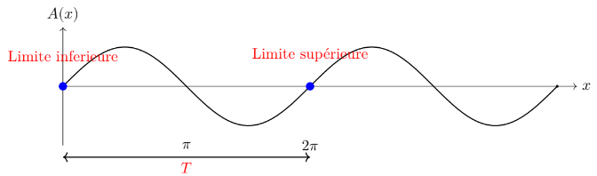
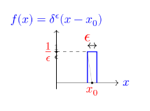
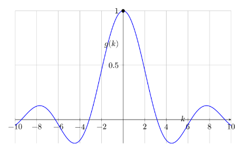
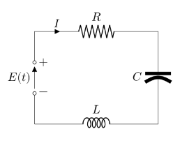
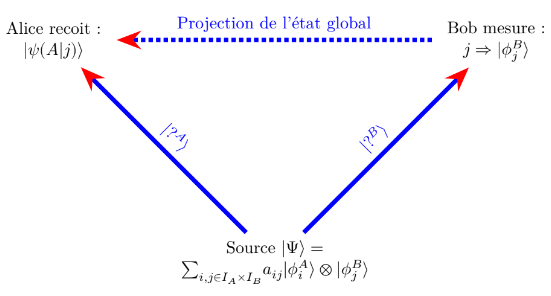

Introduction à la théorie quantique
Licence : Ce document est placé sous licence Creative Commons Attribution 4.0 International (CC BY 4.0).
Version : 1.0.2 (Dernière mise à jour : 02 janvier 2026)
Informations légales et de version :
Ce travail a pour vocation d’être un socle théorique et pédagogique en amont de formations appliquées. Il s’adresse aux gens concernés par la convergence entre quantique et réseaux.
Ce document n’a fait l’objet d’aucune évaluation par les pairs (peer-review).
Ce n’est pas non plus un doublons d’un cours de physique comme on donne aux étudiants en physique. En effet la vocation n’est pas la même.
1 Démarche et motivation pédagogique :
Ce document est l’aboutissement d’une démarche construite sur trois piliers distincts, reliant l’histoire de l’enseignement à l’innovation architecturale :
Évolution de l’enseignement quantique : La seconde révolution
Ancienne vocation (Il y a 40 ans) : acquérir une compétence pratique dans le domaine des semi-conducteurs.
Vocation actuelle : sensibiliser le futur ingénieur aux enjeux industriels de la seconde révolution quantique, qui, portée par la vérification expérimentale de l’intrication, a ouvert la porte à l’informatique quantique.
Valorisation pédagogique : l’approche par la mécanique matricielle
Source : l’ouvrage “Calcul matriciel. application à la physique quantique” (Blaquière and Jean 1960) (1960).
Intérêt : Proposer une approche progressive et ambitieuse du formalisme de l’algèbre linéaire, jugée particulièrement aidante pour l’appropriation par les non-mathématiciens.
Analogie architecturale : nouveaux formalismes pour la décentralisation
Problématique : La représentation et la modélisation des architectures décentralisées de la technologie Blockchain nécessitent de nouveaux formalismes.
Hypothèse de synergie : Une recherche par analogie dans d’autres domaines, notamment la quantique, peut enrichir la conception de la blockchain, créant un bénéfice structurel et conceptuel réciproque.
2 Introduction historique :
2.1 Le document de rupture de 1925 :
On situe quelquefois la naissance de la quantique par la découverte de la constante de Planck, ou bien celle de l’équation de Schrödinger, ou bien le papier de Heisenberg de 1925 :“Über quantentheoretische Umdeutung kinematischer und mechanischer Beziehungen” (Heisenberg 1925) qui pose un nouveau formalisme.
Avertissement : Le document de 1925 n’est pas simple du tout à lire car certaines étapes sont peu détaillés. Il donne l’impression d’un “brouillon de fin de nuit blanche”. Il constitue pourtant un document charnière.

Nous allons rentrer dans le document afin d’introduire des themes nouveaux.
C’est semble t il une simple discussion avec Niels Bohr qui a convaincu Heisenberg de s’attaquer au problème de la détermination de la trajectoire de l’électron autour d’un atome. Ensuite Heisenberg a profité de son isolement sur l’île de Heligoland pour soigner une allergie aux pollens de fleurs pour y réfléchir.
2.2 Seconde loi de Newton en physique classique :
Formulée en 1687 dans ses Principia, la seconde loi de Newton révolutionne la physique en liant la force au changement de mouvement. Elle s’exprime par la célèbre relation \vec{F} = m\vec{a} qu’Heisenberg exprime sous forme simplifiée :
\ddot{x} + f(x) = 0
Si Heisenberg pose cette formule connu, ce n’est pas pour le plaisir de faire de la physique classique mais car il pense que l’on peut partir de cette formule et en trouver une extension quantique. Il cherche une algèbre. Ainsi il cherche à construire en théorie quantique un formalisme qui corresponde le plus étroitement possible à celui de la mécanique classique.
2.3 Définition de l’action pour Bohr :
Le concept d’action naît au XVIIIe siècle avec Maupertuis et Euler, qui postulent que la nature est “économe” et minimise toujours une quantité physique lors d’un mouvement.
Heisenberg s’intéresse à la notion d’action, prise comme l’impact et qui peut s’exprimer comme une énergie que multiplie une durée, ou comme une vitesse que multiplie une distance. h signifie ici le quantum d’action. Cela signifie qu’en quantique la constante de planck h introduit une nouvelle dimension à l’action.
\oint pdq=\oint m\dot{x}dx=J(=nh)
Toutefois ici il faut se placer dans la physique de époque et J représente l’action et elle est un multiple de n. Cela signifie que plus le niveau énergie est élevé plus l’action pour l’atteindre est importante. L’action peut être le produite de énergie par la durée ou du déplacement par la vitesse. Cette formulation de l’action va être profondément remise en cause par Heisenberg.
2.4 Introduction du paramètre position :
- tout d’abord, nous cherchons a exprimer la position x d’une particule. En supposant la fonction périodique nous allons la décomposer en série de fourier,
x=\Sigma_{+\infty}^{-\infty}a_{\alpha}(n)e^{i\alpha\omega_{n}t}
Attention ici il s’agit d’une expression en physique classique. Mais nous allons voir que Heisenberg va “abandonner” x car considere comme non observable. Toutefois nous restons encore dans le cadre la la mécanique classique. Un mouvement périodique peut être un oscillateur harmonique mais surtout la trajectoire d’un electron sur son orbite imaginée dans le modele de Bohr. On dirait que Heisenberg presuppose que le mouvement quantique est périodique. En realite il exige que si un mouvement quantique existe alors il permet un mouvement classique périodique. Dans le modèle de Bohr le mouvement classique était considéré comme un cas particulier du mouvement quantique (celui ou n est très grand). C’est pour cette raison (qu’on appelle principe de correspondance) que l’on peut prendre le mouvement périodique classique comme point de départ du raisonnement. Plus tard on se détachera de la vision continue de x(t) de la physique classique.
2.5 Mise en evidence de l’energie :
Il suffit de la dériver pour prendre l’expression de v.
m\dot{x}=\Sigma_{+\infty}^{-\infty}a_{\alpha}(n)i\alpha\omega_{n}e^{i\alpha\omega_{n}t}
En basculant de dq en dt on introduit un carre. L’énergie cinétique est une vitesse au carrée. Le carre introduit qu’il s’agit d’une énergie. On remarque que ici on raisonne toujours en physique classique. Toutefois on se positionne a raisonner en terme d’énergie, or une transition entre un état n et un état n+1 et bien quelque chose qui coûte une certaine énergie. On voit l’intuition d’Heisenberg. Le terme a_{\alpha}(n) \cdot a_{-\alpha}(n) préfigure \left|a_{\alpha}(n)\right|^2. Heisenberg s’intéresse beaucoup aux amplitudes et a leurs significations physiques.
\oint m\dot{x}dx=\oint m\dot{x}^2dt=2\pi m\Sigma_{+\infty}^{-\infty}a_{\alpha}(n)a_{-\alpha}(n)\alpha^2\omega_{n}
2.6 Limite classique dans la formulation de l’action :
On obtient ainsi le terme suivant :
\oint mx^2dt=2\pi \Sigma_{+\infty}^{-\infty} |a_{\alpha}(n)|^2\alpha^2\omega_{n}
Ici Heisenberg explique que cette formulation ne le satisfait pas. Il en préfère une autre :
\frac{d}{dn}(nh)=\frac{d}{dn}\oint m\dot{x}dt
Dans cette partie difficile, Heisenberg cherche à tout prix à exprimer l’action non pas comme liée a un niveau d’énergie n donné mais a la différence entre deux niveaux, d’où l’expression de la derivée \frac{d}{dn}
On construira plus tard une matrice dérivée (opérateur de dérivation) et nous verrons qu’elle permettra de mettre en valeurs des valeurs propres ou valeurs mesurables de la vitesse de la particule. Ainsi le formalisme est pose.
Pour n grand dn est tres petit et donc la derivve de nh par rapport a n vaut h d ou la formule suivante :
h=2\pi m \Sigma_{+\infty}^{-\infty} \alpha \frac{d}{dn} a\alpha \omega_{n} |a_{\alpha}|^2
On peut remarquer que jusqu’ici on est toujours dans la physique classique car la difference de niveaux est exprimee par dn.
2.7 Introduction de la quantification dans les indices :
Revenons a la formule classique de l’action : \oint p \, dq = nh.
p est une impulsion (p = m \dot{q}) et q une position. En remplacant x et v par leurs valeurs mais en ajoutant les indices on finit par obtenir la formule suivante :
h = 4\pi m \Sigma_{0}^{+\infty}\alpha{|a(n,n+\alpha)|^2\omega(n,n+\alpha)}-{|a(n,n-\alpha)|^2\omega(n,n-\alpha)}
Enfin ici Heisenberg a utilise la théorie de Kramer qui introduit des amplitudes de transition. On a réalisé le “saut”.
On voit qu’il y a des transitions dans le sens montants, d’autres dans le sens descendant mais la différence n’est pas nulle : elle est même constante, égale à h. On introduit l’algèbre non commutative (celle qui dit que p.x \neq p.x) dans la physique.
On remarque aussi qu’il n’y a dans la formule pas de mention de la position ni de la vitesse.
Cet article de Heisenberg de 1925 est très abstrait, en particulier le concept de position dont je rappelle les points ici, au risque de tomber dans l’interprétation :
le point de départ est la physique classique et la formulation de x(t) sous la forme d’une série de fourrier. Il s’agit de voir la quantique comme une extension de la physique classique (et pas l’inverse comme on le fait souvent).
on abandonne la possibilité de la position. Il s’agit quasiment d’un choix arbitraire.
en troisième lieu la position ressuscite sous forme de la matrice position X. Toutefois prendre un stylo et une feuille de papier, dessiner une matrice avec un X dedans ne suffit pas a faire une matrice position. Les composantes de la machine expriment des transitions d’états (on remplace un espace des positions par un espace des transitions). C’est bien la position de X dans la relation de la non commutation (X.Y\neq Y.X) qui fait les propriétés de la matrice X.
On voit comment la spacialité éclate complètement au profit des composantes de la matrices qui expriment des potentialités.
2.8 L’oscillateur anharmonique :
Ce paragraphe est important car il prouve la validité de la méthode de Heisenberg. Elle a des similitudes avec la méthode utilisée jusqu’à présent. Tout d’abord Heisenberg par de la physique classique
Voici la définition :
x=\lambda a_{0}+a_{1}coswt +\lambda a_{2}cos2wt + \lambda^2a_{3}cos3wt + ...+ \lambda^{\tau-1}a_{r}cos\tau\omega t
on a les relations de récurrence :
\omega_0^2 (\lambda a_0) + \lambda \langle x^2 \rangle = 0
Ici encore Heisenberg s’intéresse aux amplitudes : on laisse tomber x et on exprimer l’amplitude en fonction de n et de la fréquence. Ces amplitudes constituent des transitions d’états.
Sans rentrer dans les details on tombe sur :
a^2(n,n-1)=\frac{(n+const)h}{\pi\omega_{0}}
et de fil en aiguille Heisenberg finie par aboutir à la formule de l’oscillateur :
W=(n+\frac{1}{2})hw_{0}/2\pi
Dans le document de 1925 la partie sur l’oscillateur harmonique est de loin la plus obscure à première lecture et pourtant le résultat est juste.
2.9 Conclusion :
On entend quelquefois que Heisenberg abouti aux résultats de la mécanique ondulatoire mais en “évitant l’onde”. De plus le document de 1925 présente une très grande cohérence d’approche dans sa méthode puisque qu’il applique pour l’oscillateur anharmonique exactement la même méthode qu’avant dans le document.
L’image ci-dessous présente les participants au congres de Solvay de 1927. En deux ans, la nouvelle physique était née.
3 Faits experimentaux :
3.1 Le corps noir :
Le corps noir n’est pas forcément noir. C’est un concept théorique désignant un objet idéal qui absorbe tout le rayonnement électromagnétique qu’il reçoit. Dans la pratique, il est modélisé par une cavité avec une ouverture qui piège les rayons lumineux à l’intérieur. S’il ne reçoit aucun rayonnement extérieur, l’objet émet son propre rayonnement (chaleur ou lumière), uniquement en fonction de sa température. C’est cette émission d’énergie, dont la courbe spectrale n’est pas explicable par la physique classique, qui a conduit à la quantification de l’énergie.

A un moment Planck eut l’idée d’introduire une constante h qui règle le problème qui vaut : h=6,626.10^{-34}J.s. Il imaginait que le corps noir se comportait comme un oscillateur harmonique de fréquence \mu mais dont les niveaux énergie sont quantifiés. Il s’agissait d’une astuce afin de faire coller les résultats avec l’expérience. Planck ne prévoyait pas un très grand avenir scientifique à la constante h qu’il avait introduite. C’est Einstein qui valorisa cette constante en proposant en 1905 une interprétation simple et efficace de l’effet photoélectrique en postulant que le rayonnement électromagnétique était lui même composé de quantas de lumière, appelés plus tard photons d’énergie \epsilon=h\mu. Ces quantas d’ énergie ne furent appelées photons qu’en 1926.

Max Planck (Planck 1901) écrit :
“si nous appliquons la loi de déplacement de Wien sous sa dernière forme à l’expression de l’entropie S, nous nous rendons compte que l’élément d’énergie \epsilon doit être proportionnel au nombre d’oscillations \mu et que donc : \epsilon=h\mu”
puis un peu plus loin Planck donne une première estimation pour h : h=6.55.10^{-27} erg.sec
A comparer avec la valeur réelle : 6,62607015 \times 10^{-34} J.s
h s’exprime en joules secondes : en physique il s’agit d’une action. Pour cette raison on appelle aussi h le quantum d’action.
3.2 L’effet photoélectrique :
Albert Einstein écrit : (Einstein 1905)
“Il me semble que les observations portant sur le”rayonnement noir” (…) apparaissent comme plus compréhensibles si on admet que l’energie de la lumière est distribuée de façon discontinue dans l’espace. Selon l’hypothèse envisagée ici, lors de la propagation d’un rayon lumineux émis par une source ponctuelle, l’énergie n’est pas distribuée de façon continue sur des espaces de plus en plus grands, mais est constituée d’un nombre fini de quantas d’énergie localises en des points de l’espace”.
Einstein pose dans cet article daté du 09 juin 1905 (soit environ 6 mois avant son célèbre article sur la relation masse énergie) la discontinuité de l’énergie non plus comme une constatation expérimentale mais comme un fondement théorique. Cet article lui vaudra le Prix Nobel de physique en 1921.
L’équation d’Einstein pour l’effet photoélectrique s’écrit :
\boxed{h\nu =W_{S}+{\frac {1}{2}}mv^{2}} où :
h\nu est l’énergie du photon ;
W_{S} est l’énergie de liaison de l’électron ;
\frac {1}{2}mv^{2} est l’énergie cinétique finale de l’électron. L’énergie d’un photon est caractérisée par la formule.
On considère que l’effet photoélectrique a fait apparaître l’aspect corpusculaire de la lumière (en plus de ondulatoire). (Greiner 2009)
3.3 Expérience des fentes d’Young :
3.3.1 Fentes d’Young avec la lumière :
En optique on admet que les trous S1 et S2 se comportent comme des sources secondaires qui, issues de la même source primaire S, mettent de sondes sphériques cohérentes entre elles. C’est le principe d’Huygens-Fresnel.
En tout point P du plan d’observation la fonction d’onde \Phi résulte de la superposition linéaire des fonctions d’onde \Phi 1 et \Phi 2.
\Phi=\Phi 1 +\Phi 2
3.3.2 Fentes d’Young avec des électrons :

L’expérience pionnière de Faget et Fert a été reproduite avec deux fentes et plus par le physicien allemand Claus Joösson en 1961. En envoyant des électrons d’énergie cinétique E_{k}=50 keV sur une feuille de cuivre percée de deux fentes de largeur 0,5\mu m, distantes de 0,2\mu m, Jönsson observa sur une plaque photographique placée dans le plan d’observation P, des franges d’interférence des ondes électroniques(Perez, Carles, and Pujol 2013).
Dans l’expérience précédente la source primaire S émet des électrons que l’on détecte en P dans le plan P, après traversée des trous S1 et S2. En réduisant le flux d’électrons de telle sorte qu’entre S et P, à tout instant il n’y ait qu’un seul électron, on observe des points d’impact discrets dus aux électrons collectés pendant la durée d’exposition.
Si cette durée est faible, les points d’impact semblent se répartir de manière aléatoire. En revanche, si elle est suffisante, les impacts se répartissent peu à peu selon la figure d’interférence. Ceci est surprenant car à un électron unique on associe bien aussi une onde.
L’onde considérée en quantique est une onde de probabilité : elle diffère donc fondamentalement d’une onde physique habituelle, mécanique ou électromagnétique, puisque elle ne représente pas la variation d’une grandeur physique.
Nous reviendrons plus tard dans le cours sur l’approche statistique de la physique quantique.
4 Fondements Mathématiques :
Un jour étant étudiant j’avais été invite par un camarade à une soirée et là il y a avait un étudiant en mathématique qui disait que les mathématiciens étaient des gens formidables. Puis il a dit fièrement que la veille il s’était “amusé” à travailler avec des collègues sur un espace à environ 30 dimensions. J’étais surpris et septique sur l’utilité. Pourtant en physique quantique on travaille bien sur des espaces abstraits de dimension infinie. C’est une des raisons qui font que ce formalisme est réputé difficile.
L’informatique quantique repose sur le formalisme des espaces de Hilbert. Voici les définitions fondamentales adaptées de Wiggins (2024). Même si elles semblent abstraites il vaut mieux les accepter telles quelles pour l’instant.
Un espace vectoriel, noté \mathcal{V} sur un corps \mathcal{F} (ici, l’ensemble des nombres complexes \mathbb{C}, est un ensemble d’éléments (appelés vecteurs) sur lequel deux opérations sont définies :
Addition vectorielle : \forall |\psi \rangle |\phi\rangle \in \mathcal{V} \implies |\psi\rangle + |\phi\rangle \in \mathcal{V}
Multiplication par un scalaire : \forall \alpha \in \mathbb{C}, |\psi \rangle \in \mathcal{V} \implies \alpha |\psi\rangle \in \mathcal{V}
Un espace de Hilbert est un espace vectoriel \mathcal{V} muni d’un produit scalaire et qui est complet (c’est-à-dire que toute suite de Cauchy converge fortement vers un vecteur appartenant à \mathcal{V}).
L’espace des états d’un système de mécanique quantique est un espace de Hilbert complexe.
Un vecteur d’état est un vecteur de cet espace ayant une norme unitaire :
\langle \psi | \psi \rangle = 1
4.1 Produit scalaire de deux vecteurs :
Le produit scalaire de deux vecteurs et le produit de leurs longueurs et du cosinus de l’angle qu’ils définissent.
on écrit : \boxed{\vec{V_1} \times \vec{V_2}=V_1 \times V_2 \times cos \theta} \theta étant l’angle des deux vecteurs \vec{V1} et \vec{V2}.
Soient X_1 et Y_1 les composantes de V_1, X_2 et Y_2 les composantes de V_2
L’expression analytique de leur produit scalaire est : \vec{V_1}\vec{V_2} = X_1X_2 + Y_1Y_2 pouvant être écrit sous la forme :
\begin{pmatrix} X_2 & Y_2 \end{pmatrix}\begin{pmatrix} X_1 \\ Y_1 \end{pmatrix}
ou bien :
\begin{pmatrix} X_1 & Y_1 \end{pmatrix}\begin{pmatrix} X_2 \\ Y_2 \end{pmatrix}
Les vecteurs sont orthogonaux lorsque leur produit scalaire est nul.
Voici une definition plus mathematique :
An inner product on a vector space V is a map of an ordered pair of vectors (\Psi, \phi) to the complex numbers that satisfy the following properties : 1. (\Phi, \alpha \phi + \beta \chi)=\alpha(\Psi, \phi)+\beta(\Psi, \chi) 2. (\Phi,\phi)=\overline{(\phi,\Phi)} 3. (\phi, \phi)\geq 0 and equality holds if and only if \Phi=0, for any \alpha, \beta \in \mathbb{C}, \Phi, \phi, \chi \in V.(Wiggins 2024)
4.2 Norme d’un vecteur :
La norme d’un vecteur est une quantité qui caractérise sa longueur ou sa taille. Elle permet de mesurer la distance entre l’origine du repère et le point représenté par le vecteur. Mathématiquement, pour un vecteur \vec{v} = (v1, v2, ..., v_n) dans un espace de dimension n, la norme est donnée par la formule :
\boxed{|\vec{v}| = \sqrt{v_1^2 + v_2^2 + \dots + v_n^2}}
Voici une définition plus mathématique de la norme :
For any vector \Phi \in V, we define the norm of \Phi, denoted \lVert \Phi \rVert, as follow : \lVert \Phi \rVert=\sqrt{(\Phi,\Phi)} (Wiggins 2024)
4.3 Equation aux valeurs propres :
Nous allons généraliser les résultats vu précédemment.
Un vecteur est maintenant représenté par une matrice de rang n représenté ici par une matrice unicolonne.
\left| V \right\rangle= \begin{pmatrix} x_1 \\ x_2 \\ . \\ . \\ . \\ x_n \end{pmatrix}
ou par sa matrice uniligne associée :
\left\langle V \right|=\begin{pmatrix} x_1 & x_2 & . & . & . & x_n \end{pmatrix} Une matrice carrée de rang n peut etre considérée comme un opérateur linéaire dans un espace à n dimensions.
La loi de transformation s’exprime par l’égalité matricielle qui transformera un vecteur \vec{V} en un vecteur \vec{V'} :
\begin{pmatrix} x_1' \\ x_2' \\ . \\ . \\ . \\ x_n ' \end{pmatrix} = \begin{vmatrix} a_1¹ & a_1² & . & . & . & a_1^n \\ . & . & . & . & . & . \\ a_n¹ & a_n² & . & . & . & a_n^n \end{vmatrix} \begin{pmatrix} x_1 \\ x_2 \\ . \\ . \\ . \\ x_n \end{pmatrix} équivalente au système d’équations linéaires :
x_1'=a_1¹x_1 + a_1²x_2 + ... + a_1^nx_n
x_2'=a_2¹x_1 + a_2²x_2 + ... + a_2^nx_n
... x_n'=a_n¹x_1 + a_n²x_2 + ... + a_n^nx_n
Un vecteur \left| V \right\rangle sera dit vecteur propre de la matrice A si l’opération se réduit à une simple multiplication du vecteur \left| V \right\rangle par le scalaire \lambda
Le transformé V’ est alors de la forme : \left| V' \right\rangle=\lambda \left| V \right\rangle
Le facteur \lambda est un nombre réel ou complexe.
Ainsi la relation de définition d’un vecteur propre de la matrice A est :
\boxed{A \left| V \right\rangle=\lambda \left| V \right\rangle}
\lambda est appelée valeur propre associée au vecteur propre \left| V \right\rangle.
On peut appeler cette équation une équation aux valeurs propres. Dans notre “chemin pédagogique” nous allons voir que c’est une expression qui va nous intéresser dans la recherche des valeurs mesurables.
Nous parlerons plus loin de fonction d’onde \Psi pour décrire l’état d’une particule. Nous poserons que si |\Psi_n \rangle est vecteur propre de l’opérateur A, avec la valeur propre a_n alors : \boxed{A|\Psi_n\rangle=a_n|\Psi_n}
4.4 Produit hermitien :
En anglais complex inner product.
Pour simplifier, le produit hermitien de deux vecteurs dans un espace vectoriel complexe est une opération qui associe à ces deux vecteurs un nombre complexe. Il est défini comme le produit du premier vecteur par le conjugué de l’autre vecteur.
Prenons le cas de vecteurs complexes.
\left| V_1 \right\rangle=\begin{pmatrix} x \\ -ix \end{pmatrix}
Le BRA correspondant est :
\left\langle V_1 \right|=\begin{pmatrix} x & ix \\ \end{pmatrix}
La norme de \left| V_1 \right\rangle est alors par définition :
\left\| V_1 \right\| =\begin{pmatrix} x & ix \\ \end{pmatrix}\begin{pmatrix} x \\ -ix \end{pmatrix}=2x²
Pour normer le vecteur \left |V_1\right\rangle à l’unité il faut donc donner à x la valeur x=\frac{1}{\sqrt{2}}
Le vecteur normé est alors : \left| V_1 \right\rangle=\frac{1}{\sqrt{2}}\begin{pmatrix} 1 \\ -i \end{pmatrix}
Si on convient d’appeler vecteurs orthogonaux deux vecteur complexes \left| V_1 \right\rangle , \left| V_2 \right\rangle
pour lesquels on a : \left\langle V_1|V_2 \right\rangle=\left\langle V_2|V_1 \right\rangle=0
nous voyons que le produit : \left\langle V_1|V_2 \right\rangle qui généralise le produit scalaire de deux vecteurs réels est appelé produit hermitien de deux vecteurs complexes.
Contrairement au produit scalaire, le produit hermitien n’est pas commutatif.
\left\langle V_1|V_2 \right\rangle\neq\left\langle V_2|V_1 \right\rangle
Il est clair que lorsque les vecteurs sont réels, cette définition se confond avec celle du produit scalaire.
Selon (Wiggins 2024) page 6
(\Psi,\phi)=\int_D \overline{\Psi(x)}\phi(x)dx et L^2(D) denote the set of all complex value functions of the real variable x, defined on some domain D\in\mathbb{R}
4.5 Matrice hermitique :
Nous serons amenés à représenter les grandeurs physiques par des matrices, puis à préciser la notion de mesure.
Un postulat raisonnable sera d’admettre que la mesure de la grandeur envisagée est l’une des valeurs propres de sa matrice représentative.
Comme en mécanique classique le résultat d’une mesure est un nombre.
Etant donné qu’une matrice possède tout un spectre de valeurs propres :
\lambda_1 \lambda_2 . . .......\lambda_n
La notion d’indéterminisme s’introduit : Rien ne permet de savoir en effet, à priori, quelle est la valeur propre qui sortira du lot lorsque l’on effectue la mesure.
- Le résultat d’une mesure doit être un nombre réel. Or les seules matrices dont les valeurs propres sont toutes réelles sont les matrices hermitiques.
Définition : Une matrice hermitique est une matrice carrée à nombres complexes qui est égale à sa transposée conjuguée. En termes simples, cela signifie que chaque élément de la matrice est le conjugué de l’élément symétrique par rapport à la diagonale principale, et que les éléments sur la diagonale sont des nombres réels.
Comme la matrice adjointe d’une matrice donnée s’obtient en effectuant une symétrie par rapport à la diagonale principale, puis en prenant les conjugués des éléments, on voit qu’une matrice hermitique se caractérise par la propriété suivante :
Les éléments de la diagonale principale sont des nombres réels.
Les éléments non diagonaux symétriques par rapport à la diagonale principale sont des nombres complexes conjugués. Par exemple la matrice de Pauli est une matrice hermitique :
\begin{vmatrix} 0 & i \\ -i & 0 \end{vmatrix}
4.6 Valeurs propres et vecteurs propres des matrices hermitiques :
Théorème 1 : les valeurs propres d’une matrice hermitique sont toutes réelles
Théorème 2 : les vecteurs propres d’une matrice hermitique associée à des valeurs propres distinctes sont orthogonaux.
Ainsi nous voyons que nous avons intérêt à nous ramener dans la situation d’une matrice hermitique.
4.7 Décomposition d’un vecteur sur la base des vecteurs propres d’une matrice hermitique :
Les vecteurs propres d’une matrice hermitique forment un système orthogonal c’est-à-dire un système dont les vecteurs sont orthogonaux deux à deux.
Cet ensemble de n vecteurs propres peut être choisi comme base d’un espace à n dimensions.
Tout vecteur \left| V \right\rangle peut être décomposé de façon unique sur cette base orthogonale.
Soient : \left| V_1 \right\rangle \left| V_2 \right\rangle ............\left| V_n \right\rangle
l’ensemble des n vecteurs propres.
Tout vecteur \left| V \right\rangle peut être mis sous la forme : \left| V \right\rangle= x_1\left| V_1 \right\rangle + x_2\left| V_2 \right\rangle + ........... + x_n\left| V_n \right\rangle
Nous supposerons de plus que les vecteurs propres sont normés à l’unité, moyennant quoi les composantes x_1, x_2, ……, x_n s’écrivent :
x_1=\left\langle V_1|V\right\rangle
x_2=\left\langle V_2|V \right\rangle
......
x_n=\left\langle V_n|V \right\rangle
4.8 Représentation d’un opérateur sur la base des vecteurs propres d’une matrice hermitique :
Nous nous intéressons ici à la représentation d’un opérateur linéaire donné B en adoptant pour vecteurs de base les n vecteurs propres orthogonaux et normés d’un opérateur hermitique A.
Un vecteur quelconque \left\langle V \right| étant décomposé sur la base de ces n vecteurs propres faisons lui subir l’opération B. Il vient :
B\left| V \right\rangle=x_1B\left| V_1 \right\rangle + x_2B\left| V2 \right\rangle + ... + x_nB\left| V_n \right\rangle
Le transformé B\left|V\right\rangle se trouve ainsi exprimé à partir des n transformés des vecteurs de base :
B\left| V_1 \right\rangle, B\left| V_2 \right\rangle, ......., B\left| V_n \right\rangle
vecteurs que nous pouvons décomposer à leur tour sur la base choisie :
B\left| V_1 \right\rangle=B_1¹\left| V1 \right\rangle + B_2¹\left| V2 \right\rangle + ... +B_n¹\left| Vn \right\rangle
B\left| V_2 \right\rangle=B_1²\left| V1 \right\rangle + B_2²\left| V2 \right\rangle + ... +B_n²\left| Vn \right\rangle
....

\left\langle V_1 \right| \left\langle V_2 \right| : vecteurs propres d’une matrice hermitique A
\left\langle V \right| vecteur quelconque du plan, décomposé sur la base \left\langle V_1 \right| \left\langle V_2 \right|
L’opérateur B se trouve ainsi représenté par la matrice :
\begin{pmatrix} B_1¹ & B_1² &.... & B_1^n \\ B_2¹ & B_2² &.....& B_2^n \\ .... & .... & ..... & ....\\ B_n¹ & B_n² & .... & B_n^n \end{pmatrix}
4.9 Quelle est la représentation de la matrice hermitique A dans cette base particulière ? :
Appliquons à l’opérateur A un vecteur \left| V \right\rangle quelconque.
On obtient :
A\left| V \right\rangle = x_1A\left| V_1 \right\rangle + x_2A\left| V_2 \right\rangle + .... + x_nA\left| V_n \right\rangle
Comme \left| V_1 \right\rangle, \left| V_2 \right\rangle, … \left| V_n \right\rangle sont vecteurs propres de A avec valeurs propres : \lambda_1, \lambda_2, …., \lambda_n
Cette loi de transformation s’écrit : A\left| V \right\rangle = \lambda_1x_1\left| V_1 \right\rangle + \lambda_2x_2\left| V_2 \right\rangle + .... + \lambda_n x_n\left| V_n \right\rangle
On voit que la matrice qui représente l’opérateur A est de la forme :
A= \begin{pmatrix} \lambda_1 & 0 & 0 & ... \\ 0 & \lambda_2 & 0 & ... \\ 0 & 0 & \lambda_3 & ....\\ ... & ... & .... & .... \end{pmatrix}
C’est une matrice diagonale dont les élèments sont les valeurs propres de l’opérateur A.
4.10 Opérations sur des fonctions et opérations sur des vecteurs :
Nous avons vu jusqu’ici qu’une opération linéaire portant sur un vecteur, c’est à dire une transformation linéaire qui fait passer d’un vecteur quelconque \vec{V_1} à un vecteur \vec{V_2} est représentable par une matrice M.
Dans le cas des fonctions, nous connaissons des transformations linéaires simples qui au premier abord ne semblent pas nécessiter l’utilisation de matrices. Ainsi l’opération de dérivation d/dx fait passer de toute fonction dérivable f(x) à une autre fonction g(x) : g(x)=\frac{\partial f(x)}{\partial x}
Cette opération est linéaire, car f_{1}(x) et f_{2}(x) étant deux fonctions dérivables quelconques, on a : \frac{d}{dx}[f_1(x) + f_2(x)]=\frac{d}{dx}f_1(x) + \frac{d}{dx}f_2(x)
De plus si \alpha est un scalaire et f(x) une fonction dérivable quelconque :
\frac{d}{dx}\alpha f(x)=\alpha\frac{d}{dx}f(x)
Si f(x) est considéré comme un vecteur et g(x) comme le vecteur transformé l’opérateur \frac{d}{dx} doit être représentable par une matrice.
Tout opérateur linéaire qu’il porte sur un vecteur classique ou une fonction (vecteur généralisé) peut être représenté par une matrice.
Les deux aspects de la mécanique quantique, celui où les phénomènes sont décrits par une fonction d’onde et des opérateurs différentiels qui en régissent l’évolution, et celui ou les états du système étudié sont représentés par des vecteurs régis par des matrices, apparaitrons alors comme parfaitement équivalents.
Les fondateurs de la mécanique quantique ont abordé les problèmes sous deux angles différents : Louis de Broglie, Schrödinger adoptaient pour point de départ les opérateurs différentiels tandis que Heisenberg utilisait la description matricielle, reprise sous une forme plus élaborée par Dirac.
4.11 Opérateurs fonctionnels, fonctions propres, valeurs propres :
Un opérateur fonctionnel \hat{A} transforme une fonction f(x) en une autre fonction g(x) = \hat{A}f(x). Les exemples typiques incluent les opérateurs de dérivation (comme \frac{d}{dx}) ou l’opérateur de multiplication par la variable (\hat{X} = x \times).
Dans le cas des fonctions continues d’une variable x, on peut prendre par exemple les opérations de dérivation :
\frac{d}{dx}
\frac{d^2f}{dx^2}
ou bien l’opérateur laplacien :
\nabla^2 f = \frac{\partial^2 f}{\partial x^2} + \frac{\partial^2 f}{\partial y^2} + \frac{\partial^2 f}{\partial z^2}
Le symbole du laplacien est : \Delta. Toutefois on peut trouver aussi \nabla^2, \nabla représentant un gradient.
On peut aussi imaginer des opérations qui ne font pas intervenir des symboles de dérivation. Par exemple à toute fonction f(x) d’une variable x on pourra faire correspondre la fonction transformée : g(x)=xf(x)
L’opérateur sera noté ici x \times
D’un point de vue pratique, le passage d’une matrice à un opérateur peut sembler difficile à justifier. Par exemple, dans la base de Fourier les vecteurs sont bien séparés les uns des autres. Toutefois dans la base en x les vecteurs sont une infinité de peigne de Dirac très rapprochés correspondant aux différentes positions. On passe ainsi à un modèle continue qui justifie l’usage d’une fonction (un opérateur) plus qu’un tableau (une matrice). Donc une matrice (en relation avec un vecteur d’état) peut devenir un opérateur qui sera en relation avec une fonction d’ état (la fonction d’onde de Schrödinger en étant un exemple).
4.12 Produit d’opérateurs fonctionnels :
Considérons une fonction d’une variable x; un opérateur A transforme toute fonction f(x) en une autre fonction g(x).
On écrira : g(x)=Af(x)
On peut ensuite transformer g(x) en une nouvelle fonction h(x) en utilisant un opérateur B
h(x)=Bg(x)
On définit ainsi un opérateur produit C, puisque on a : h(x)=B[Af(x)]=Cf(x)
En général AB et BA définissent deux opérateurs différents. On dit que A et B ne sont pas commutables. Mais ce n’est pas toujours le cas.
4.13 Fonction propres et valeurs propres d’un opérateur fonctionnel :
Rappel : méthode générale de résolution d’une équation différentielle du second ordre à coefficients constants : (Delbarre and Warembourg 2022) ay''+ by' + cy = 0 On considère l’équation caractéristique : ar² + br + c = 0 Soit \Delta le discriminant de cette équation.
Si \Delta > 0 on note r1 et r2 les deux solutions. Les solutions sont des fonctions du type y=A_1e^{r_1x} + A_2e^{r_2x} avec A_1 et A_2 appartenant à \mathbb{R}
Si \Delta = 0 on note r la solution. Les solutions sont des fonctions du type y=A_1e^{rx} + A_2e^{rx} avec A_1 et A_2 appartenant à \mathbb{R}
Si \Delta < 0 on note r_1 et r_2 les deux solutions complexes conjuguées de R avec r_1=\Re{r_1} + i\Im{r_1} et r_2=\Re{r_2} + i\Im{r_2}
On dit qu’une fonction f est fonction propre de l’opérateur \hat{A} avec la valeur propre a (nombre indépendant des variables) si on a :
\hat{A}f = af
L’opération se réduit dans ce cas à une simple multiplication de la fonction f par le nombre a.
Exemple 1 : Opérateur de dérivation du premier ordre
Cherchons les fonctions propres de l’opérateur
\hat{A} = \frac{d}{dx}
Si la fonction f(x) est propre de \hat{A}, on doit avoir :
\frac{d}{dx}f(x) = a f(x)
où a est la valeur propre.
Cette équation différentielle du premier ordre s’intègre comme suit :
\frac{1}{f}\frac{df}{dx} = a \quad \implies \quad \log|f| = ax + C \quad \implies \quad f(x) = k e^{a x}
Les fonctions propres de \hat{A}=\frac{d}{dx} sont de la forme f(x)=ke^{ax}, où a est la valeur propre associée.
Intuitivement, la fonction exponentielle est la seule à être aussi sa dérivée d’où la solution à l’équation aux valeurs propres est une fonction exponentielle. Toutefois je vous laisse appliquer la méthode générale de résolution d’une équation différentielle du premier ordre.
Spectre Continu : Comme la valeur propre a peut être un nombre réel ou complexe quelconque (en l’absence de conditions aux limites), l’ensemble des valeurs propres forme un spectre continu.
Spectre Discret (Rappel) : Nous rencontrerons des cas où les valeurs propres d’un opérateur sont une suite de nombres discrets a_1, a_2, \ldots, a_n, \ldots, une fonction propre f_n(x) étant attachée à chacun d’eux. Dans ce cas, on parle de spectre discret (ou spectre de raies).
Exemple 2 : Opérateur de dérivation du second ordre :
Cherchons les fonctions propres de l’opérateur
\hat{B} = \frac{d^2}{dx^2}
Si f(x) est une fonction propre de \hat{B}, on doit avoir :
\frac{d^2}{dx^2}f(x) = b f(x)
On est conduit à la résolution de l’équation différentielle du second ordre à coefficients constants :
\frac{d^2}{dx^2}f - b f = 0
Son équation caractéristique est :
m^2 - b = 0 \quad \implies \quad m = \pm \sqrt{b}
La solution générale est de la forme :
f(x) = k_1 e^{\sqrt{b} x} + k_2 e^{-\sqrt{b} x} Dans le cas où b est quelconque, l’opérateur \hat{B} possède également un spectre continu de valeurs propres.
Dégénérescence :
Ici, il y a dégénérescence car la valeur propre b est associée à deux fonctions propres linéairement indépendantes (e^{\sqrt{b} x} et e^{-\sqrt{b} x}). De plus, toute combinaison linéaire de ces fonctions propres est aussi fonction propre avec la même valeur b.
Il est aise de vérifier cela sachant que avec ar^2 + br + c=0 on a : a=1, b=0 et c=-b. Le déterminant \Delta = b^2 -4ac =0-4.1.-b=4b. Ainsi x_1=\frac{0+\sqrt{4.b}}{2}=\frac{2\sqrt{b}}{2}=\sqrt{b} et x_2=\frac{0-\sqrt{4.b}}{2}=-\sqrt{b}
On vérifie aisément que \sqrt{b} est solution en rentrant la valeur dans l’équation initiale. Ainsi \frac{d^2}{dx^2}.exp{\sqrt{b}x -b.exp{\sqrt{b}x}}=\sqrt{b}^2.exp{\sqrt{b}x}-b.exp{\sqrt{b}.x}=0
De plus toute combinaisons linéaire de fonction propres est aussi fonction propre avec la même valeur b.
4.14 Conditions aux limites :
L’application de conditions aux limites (ou conditions de bord) sur l’intervalle de définition de la fonction a pour effet de restreindre les valeurs propres possibles d’un opérateur. Cela conduit typiquement au remplacement d’un spectre continu par un spectre discret (quantification).

La figure montre une fonction sinusoïdale sur un intervalle [0, T], illustrant comment les conditions aux limites f(0)=0 et f(T)=0 imposent des longueurs d’onde discrètes.
Considérons à nouveau l’opérateur \hat{B}=\frac{d^2}{dx^2} sur l’intervalle [0, T], mais cette fois avec une condition de périodicité aux limites :
f(0) = f(T)
L’équation aux valeurs propres est toujours :
\frac{d^2}{dx^2}f(x) = b f(x)
Pour obtenir des solutions périodiques (oscillatoires), la valeur propre b doit être négative. Posons b = -\omega^2. La solution générale est alors une combinaison linéaire d’exponentielles complexes :
f(x) = C_1 e^{i\omega x} + C_2 e^{-i\omega x}
En appliquant la condition aux limites f(0) = f(T) :
C_1 e^{0} + C_2 e^{0} = C_1 e^{i\omega T} + C_2 e^{-i\omega T}
C_1 (1 - e^{i\omega T}) + C_2 (1 - e^{-i\omega T}) = 0
Pour que des solutions non triviales existent, les valeurs \omega doivent être discrètes. La condition la plus simple (et celle impliquée par l’utilisation d’une seule exponentielle complexe) est que e^{i\omega T} soit égal à 1.
e^{i\omega T} = 1
Ceci impose que l’argument \omega T soit un multiple entier de 2\pi :
\omega T = k 2\pi, \quad k \in \mathbb{Z}
D’où les valeurs discrètes (quantifiées) pour \omega :
\omega_k = \frac{k 2\pi}{T}, \quad k = 0, \pm 1, \pm 2, \ldots
Les fonctions propres de l’opérateur \hat{B}=\frac{d^2}{dx^2} qui vérifient la condition de périodicité sur l’intervalle (0, T) sont donc de la forme :
f_k(x) = e^{i \frac{k 2\pi x}{T}} \quad \text{et} \quad f_{-k}(x) = e^{-i \frac{k 2\pi x}{T}}
Les valeurs propres associées sont b_k = -\omega_k^2 = -(\frac{k 2\pi}{T})^2.
Ceci constitue un spectre discret.
4.15 Produit scalaire hermitien de deux vecteurs fonctionnels complexes :
Nous pouvons considérer ces fonctions propres complexes comme des vecteurs généralisés complexes c’est à dire des vecteurs d’un espace de Hilbert (ou vecteurs d’état).
Il nous faut étendre à ces vecteurs fonctionnels complexes la définition du produit scalaire rencontrée dans le cas des vecteurs fonctionnels réels : il s’agira du .
Pour simplifier l’écriture des vecteurs généralisés et des produits hermitiens, Paul Dirac a introduit en 1939 une notation symbolique élégante qui décompose le mot “Bracket” (crochet) en deux parties : le Bra et le Ket.
4.15.1 Le KET : L’état du système
Le Ket, noté |\psi\rangle, représente le vecteur d’état.
C’est l’équivalent quantique d’un vecteur colonne en algèbre linéaire.
Il contient toute l’information sur le système physique (sa position, son énergie, etc.).
Mathématiquement, c’est un élément d’un espace de Hilbert.
4.15.2 Le BRA : Le vecteur “miroir”
Le Bra, noté \langle\phi|, est le vecteur dual (ou vecteur ligne).
Il est obtenu en prenant le Ket, en le transposant et en prenant le complexe conjugué de ses composantes.
Si |\psi\rangle est un vecteur colonne, \langle\psi| est son équivalent sous forme de ligne “conjuguée”.
4.15.3 Le BRA-KET : Le produit scalaire
Lorsque l’on juxtapose un Bra et un Ket, on obtient un Bra-Ket \langle\phi|\psi\rangle, qui représente le produit scalaire hermitien.
Le résultat est toujours un nombre complexe.
Si on calcule \langle\psi|\psi\rangle, on obtient la norme au carré du vecteur, qui doit être égale à 1 (condition de normalisation) pour représenter une probabilité totale de 100%.
Produit scalaire hermitien de deux vecteurs fonctionnels complexes :
Soient f(x) et g(x) deux fonctions complexes d’une variable réelle x, définies sur l’intervalle [0, T], et \overline{f(x)} et \overline{g(x)} leurs conjuguées complexes respectives.
Le produit hermitien (ou produit scalaire dans l’espace de Hilbert) est défini par :
\boxed{\left\langle f|g \right\rangle=\frac{1}{T}\int_{0}^{T} \overline{f(x)} g(x)\,dx}
Ce produit hermitien est indispensable pour définir la norme des fonctions d’onde
4.16 Propriété d’orthogonalité :
Les vecteurs fonctionnels complexes \left|f\right\rangle et \left| g \right\rangle sont dits “orthogonaux” si le produit hermitien est nul. On a alors :
\left\langle f|g \right\rangle = 0
Pour des fonctions complexes, l’orthogonalité est généralement définie par \left\langle f|g \right\rangle = 0. Du fait de la définition du produit hermitien, l’égalité \left\langle g|f \right\rangle = \overline{\left\langle f|g \right\rangle} assure que si l’un est nul, l’autre l’est aussi : \left\langle g|f \right\rangle = \overline{0} = 0.
Les fonctions propres associées à des valeurs propres distinctes d’un opérateur hermitien (comme l’opérateur \frac{d^2}{dx^2} sur un domaine fini) sont orthogonales.
Il revient au même de parler de “fonctions orthogonales” ou de “vecteurs orthogonaux” puisque nous avons montré que les fonctions envisagées sont assimilables à des vecteurs (dans l’espace de Hilbert).
4.17 Norme :
On appelle norme du vecteur fonctionnel complexe \left|f\right\rangle le produit hermitien de ce vecteur par lui-même, soit :
\| f \|^2 = \langle f | f \rangle = \frac{1}{T} \int_{0}^{T} \overline{f(x)} f(x)\,dx = \frac{1}{T} \int_{0}^{T} |f(x)|^2 \, dx
Lorsque nous parlerons plus tard de la fonction d’onde représentée par le vecteur |\Psi\rangle, nous dirons que la norme au carré de |\Psi\rangle est :
\langle \Psi | \Psi \rangle = |||\Psi\rangle||^2 = \sum_{i}c_i^*c_i = \sum_{i}|c_i|^2
4.18 Norme des fonctions propres de \frac{d^2}{dx^2} :
La norme des vecteurs de la suite \left| f_k \right\rangle, c’est à dire la norme des fonctions propres :
f_k(x) = e^{ik\frac{2\pi}{T}x}
de l’opérateur \frac{d^2}{dx^2} a pour valeur :
||f_k||^2 = \left\langle f_k | f_k \right\rangle = \frac{1}{T} \int_{0}^{T} \overline{e^{ik\frac{2\pi}{T}x}} e^{ik\frac{2\pi}{T}x} \,dx = \frac{1}{T} \int_{0}^{T} e^{-ik\frac{2\pi}{T}x} e^{ik\frac{2\pi}{T}x} \,dx=\frac{1}{T} \int_{0}^{T}dx=1
Les vecteurs de la suite \left| f_k \right\rangle ont donc pour norme l’unité.
L’ensemble des vecteurs propres de l’opérateur \frac{d^2}{dx^2} orthogonaux et normés à l’unité forment un système orthonormé. On établit qu’ils peuvent être utilisés comme vecteurs de base et ainsi servir à la décomposition de n’importe quel autre vecteur.
On exprime cette propriété en disant que la suite des vecteurs propres est complète.
4.19 Développement complexe de fourier :
En 1807 Joseph Fourier, alors préfet de l’Isère, présente ses travaux sur la propagation de la chaleur. Il émet l’idée révolutionnaire que n’importe quelle fonction périodique, aussi “brisée” soit-elle, peut être reconstruite par une somme de fonctions sinus et cosinus parfaitement lisses.
Séries de Fourier : (Najib 2022)
f(x)=\sum _{n=-\infty }^{+\infty }C_{n}{e}^{{i}2\pi {\tfrac {n}{T}}x}
Cette formule exprime que la fonction f(x) est une superposition (une somme) d’ondes élémentaires.
Coefficients de Fourier :
C_{n}={\frac {1}{T}}\int _{T}f(t){e}^{-{i}2\pi {\tfrac {n}{T}}t}\mathrm {d} t. Chaque coefficient C_n agit comme un “poids” qui détermine l’importance de l’harmonique n dans le signal total.
Sous forme algébrique, la décomposition d’un vecteur fonctionnel \left| f \right\rangle sur la base des vecteurs propres \left| f_n \right\rangle de l’opérateur \frac{d^2}{dx^2} se traduit par l’identité :
f(x)=\sum _{n=-\infty }^{+\infty }C_{n}{e}^{{i}2\pi {\tfrac {n}{T}}x}
dans laquelle nous supposons que f(x) est une fonction réelle de la variable réelle x définie sur l’intervalle [0, T]. On reconnaît sous cette forme le développement de f(x) en série complexe de Fourier.
Les coefficients C_n (qui sont les composantes du vecteur \left| f \right\rangle dans cette base) se calculent par la formule de Fourier, qui est l’expression du produit hermitien entre \left| f_n \right\rangle et \left| f \right\rangle :
C_{n} = \left\langle f_n | f \right\rangle = {\frac {1}{T}}\int _{0}^{T} f(t)\overline{e^{{i}2\pi {\tfrac {n}{T}}t}}\mathrm {d} t = {\frac {1}{T}}\int _{0}^{T}f(t){e}^{-{i}2\pi {\tfrac {n}{T}}t}\mathrm {d} t
4.20 Opérateurs hermitiques et grandeurs physiques :
Après avoir fait le choix d’un intervalle de définition avec des conditions aux limites, nous appellerons opérateur fonctionnel hermitique un opérateur qui admet un système orthogonal complet de fonctions propres et dont les valeurs propres associées sont toutes réelles.
Définition de l’opérateur fonctionnel hermitique : Admet un système orthogonal complet de fonctions propres et des valeurs propres associées qui sont toutes réelles.
C’est le cas de l’opérateur
\frac{d^2}{dx^2}
(avec des conditions aux limites périodiques ou nulles) qui est donc un opérateur hermitique.
L’importance des opérateurs hermitiques provient de ce que tous les opérateurs de la mécanique quantique qui représentent des grandeurs physiques (observables) sont des opérateurs hermitiques. Les valeurs propres réelles des opérateurs hermitiens garantissent que les résultats de mesure sont des nombres réels.
L’opérateur \frac{d^2}{dx^2} est un opérateur réel car il ne contient pas le symbole “i” mais la théorie s’applique plus généralement au cas d’opérateurs complexes tels que par exemple les opérateurs que nous rencontrerons en mécanique quantique :
- L’opérateur quantité de mouvement selon x:
\hat{P}_x = \frac{\hbar}{i}\frac{d}{dx} = \frac{h}{i2\pi}\frac{d}{dx}
- L’opérateur quantité de mouvement selon y:
\hat{P}_y = \frac{h}{i2\pi}\frac{d}{dy}
- L’opérateur quantité de mouvement selon z:
\hat{P}_z = \frac{h}{i2\pi}\frac{d}{dz}
- L’opérateur énergie (Hamiltonien) dépendant du temps:
\hat{E} = -\frac{\hbar}{i}\frac{d}{dt} = -\frac{h}{i2\pi}\frac{d}{dt}
où \hbar = \frac{h}{2\pi} est la constante de Planck réduite.
4.21 Représentation d’un opérateur fonctionnel par une matrice :
Considérons maintenant un opérateur fonctionnel \hat{B}, hermitique ou non, distinct de \hat{A}. Toute fonction f(x) est transformée par \hat{B} en une autre fonction g(x) suivant :
g(x)=\hat{B}f(x)
Remplaçons dans cette égalité fonctionnelle la fonction f(x) par son développement sur la base des fonctions propres de \hat{A}, il vient :
g(x)=a_1\hat{B}f_1(x) + a_2\hat{B}f_2(x) + \cdots + a_n\hat{B}f_n(x)
Et chacune des fonctions transformées \hat{B}f_1(x), \hat{B}f_2(x), \ldots, \hat{B}f_n(x) est elle-même développable dans le cas général sur la base des fonctions propres f_1(x), f_2(x), \ldots, f_n(x) suivant :
\begin{array}{rcl} \hat{B}f\_1(x) & = & B\_1^1f\_1(x) + B\_2^1f\_2(x) + \cdots + B\_n^1f\_n(x) \\ \hat{B}f\_2(x) & = & B\_1^2f\_1(x) + B\_2^2f\_2(x) + \cdots + B\_n^2f\_n(x) \\ & \vdots & \\ \hat{B}f\_n(x) & = & B\_1^nf\_1(x) + B\_2^nf\_2(x) + \cdots + B\_n^nf\_n(x) \end{array}
Ainsi sur la base des fonctions propres de \hat{A}, l’opérateur fonctionnel \hat{B} est représentable par la matrice :
\mathbf{B}=\begin{pmatrix} B\_1^1 & B\_1^2 & \cdots & B\_1^n \\ B\_2^1 & B\_2^2 & \cdots & B\_2^n \\ \vdots & \vdots& \ddots& \vdots\\ B\_n^1 & B\_n^2 & \cdots & B\_n^n \\ \end{pmatrix}
On reconnaît les relations qui ont servi à définir une transformation matricielle. Elles font passer des composantes du vecteur \left| f \right\rangle aux composantes du vecteur \left| g \right\rangle (notées a'_k) suivant :
\begin{pmatrix} a\_1' \\ a\_2' \\ \vdots \\ a\_n' \\ \end{pmatrix}= \mathbf{B} \cdot \begin{pmatrix} a\_1 \\ a\_2 \\ \vdots \\ a\_n \\ \end{pmatrix}
Pour plus d’élégance, on peut écrire les intégrales (calculant les coefficients B_i^j) sous forme vectorielle puisqu’elles représentent des produits hermitiens.
Par exemple, le coefficient B_i^j est donné par le produit hermitien \left\langle f_i \right| \hat{B} \left| f_j \right\rangle. L’élément B_2^1 de la matrice s’écrit alors B_2^1=\left\langle f_2\right|\hat{B}|f_1\rangle.
La matrice représentative de l’opérateur \hat{B} s’écrit alors :
\mathbf{B}=\begin{pmatrix} \left\langle f\_1 \right|\hat{B}|f\_1\rangle & \left\langle f\_1 \right|\hat{B}|f\_2\rangle & \cdots & \left\langle f\_1 \right|\hat{B}|f\_n\rangle \\ \left\langle f\_2 \right|\hat{B}|f\_1\rangle & \left\langle f\_2 \right|\hat{B}|f\_2\rangle & \cdots & \left\langle f\_2 \right|\hat{B}|f\_n\rangle \\ \vdots & \vdots& \ddots& \vdots\\ \left\langle f\_n \right|\hat{B}|f\_1\rangle & \left\langle f\_n \right|\hat{B}|f\_2\rangle & \cdots & \left\langle f\_n \right|\hat{B}|f\_n\rangle \\ \end{pmatrix}
Ce sont les notations utilisées par Dirac.
4.22 Calcul pratique des éléments de la matrice \mathbf{B} :
Nous allons calculer les éléments de la matrice \mathbf{B} pour un opérateur spécifique \hat{B} dans la base des fonctions propres de \hat{A} = \frac{d^2}{dx^2}.
Nous rappelons deux théorèmes importants de l’algèbre linéaire (Wiggins 2024) :
Opérateur de Projection : Soit P : V \to V un opérateur linéaire sur un espace vectoriel V. P est appelé opérateur de projection si P^2=P.
Théorème Spectral pour les opérateurs auto-adjoints de dimension finie : Soit \mathbf{A} : V \to V un opérateur linéaire auto-adjoint sur un espace produit scalaire complexe de dimension finie. Alors :
\mathbf{A} a des valeurs propres réelles, et les vecteurs propres de \mathbf{A} correspondant à des valeurs propres distinctes sont orthogonaux.
Les vecteurs propres de \mathbf{A} engendrent V.
4.22.1 Exemple 1 : Opérateur dérivée \hat{B} = \frac{d}{dx}
Si \hat{B} est l’opérateur de dérivation \frac{d}{dx}, et si nous adoptons pour base orthonormée les fonctions propres de l’opérateur \hat{A} = \frac{d^2}{dx^2} déterminées précédemment :
f_n(x) = e^{in\omega x} \quad \text{avec } \omega = \frac{2\pi}{T}
L’élément de matrice générique \mathbf{B}_{kn} = \left\langle f_k \right| \hat{B} \left| f_n \right\rangle est donné par :
\mathbf{B}_{kn} = \frac{1}{T}\int_{0}^{T} \overline{f_k(x)} \hat{B} f_n(x)\,dx = \frac{1}{T}\int_{0}^{T} e^{-ik\omega x} \frac{d}{dx} e^{in\omega x}\,dx
Calcul des éléments non-diagonaux (\mathbf{B}_{kn} avec k \neq n) :
Prenons l’exemple de l’élément \mathbf{B}_{21} = \left\langle f_2 \right| \hat{B} \left| f_1 \right\rangle (avec \omega implicite) :
\mathbf{B}_{21} = \frac{1}{T}\int_{0}^{T}e^{-i2\omega x} \frac{d}{dx} e^{i\omega x}\,dx
=\frac{1}{T}\int_{0}^{T}e^{-i2\omega x} (i\omega e^{i\omega x})\,dx
=\frac{i\omega}{T}\int_{0}^{T}e^{-i\omega x}\,dx
=\frac{i\omega}{T}\left[ \frac{e^{-i\omega x}}{-i\omega} \right]_{0}^{T} = \frac{i\omega}{T} \left( \frac{e^{-i\omega T} - e^{0}}{-i\omega} \right)
Puisque \omega = \frac{2\pi}{T}, on a \omega T = 2\pi et e^{-i\omega T} = e^{-i2\pi} = 1.
\mathbf{B}_{21} = \frac{i\omega}{T} \left( \frac{1 - 1}{-i\omega} \right) = 0
Plus généralement, pour k \neq n :
\mathbf{B}_{kn} = \frac{i n \omega}{T}\int_{0}^{T}e^{-i(k-n)\omega x}\,dx = \frac{i n \omega}{T} \left[ \frac{e^{-i(k-n)\omega x}}{-i(k-n)\omega} \right]_{0}^{T}
Puisque (k-n)\omega T = (k-n)2\pi, on a e^{-i(k-n)\omega T} = 1. L’expression s’annule : \mathbf{B}_{kn} \propto (1 - 1) = 0.
Conclusion : Les éléments non diagonaux de la matrice représentative de \frac{d}{dx} sont tous nuls.
Calcul des éléments diagonaux (\mathbf{B}_{nn} avec k = n) :
L’élément diagonal \mathbf{B}_{nn} s’obtient en remplaçant k par n :
\mathbf{B}_{nn} = \frac{1}{T}\int_{0}^{T}e^{-in\omega x} \frac{d}{dx} e^{in\omega x}\,dx
=\frac{1}{T}\int_{0}^{T}e^{-in\omega x} (in\omega e^{in\omega x})\,dx
=\frac{in\omega}{T}\int_{0}^{T}dx
=\frac{in\omega}{T}[x]_0^T = \frac{in\omega}{T} \cdot T
\mathbf{B}_{nn} = in\omega
où \omega = \frac{2\pi}{T} est la fréquence angulaire de base.
La matrice représentative de \hat{B} = \frac{d}{dx} dans cette base est donc une matrice diagonale (ici, infinie, car n \in \mathbb{Z}), dont les éléments diagonaux sont les valeurs propres de \hat{B} :
\mathbf{B}=\begin{pmatrix} \ddots & & & & & & & \\ & -i3\omega & 0 & 0 & 0 & 0 & 0 & \\ & 0 & -i2\omega & 0 & 0 & 0 & 0 & \\ & 0 & 0 & -i\omega & 0 & 0 & 0 & \\ & 0 & 0 & 0 & 0 & 0 & 0 & \\ % Pour n=0 & 0 & 0 & 0 & 0 & i\omega & 0 & \\ & 0 & 0 & 0 & 0 & 0 & i2\omega & \\ & & & & & & & \ddots \end{pmatrix}
Les termes diagonaux sont de la forme in\omega et ne sont pas réels, donc la matrice \mathbf{B} n’est pas hermitienne.
Cependant, on obtiendrait une matrice hermitienne en considérant l’opérateur \hat{P}_x = \frac{1}{i}\frac{d}{dx} (qui, dans sa forme physique \hat{P}_x = \frac{\hbar}{i}\frac{d}{dx}, représente la quantité de mouvement). L’élément de matrice pour \hat{P}_x serait \mathbf{P}_{nn} = \frac{1}{i} (in\omega) = n\omega, qui est un nombre réel.
Ce raisonnement se généralise et permet de représenter sous forme matricielle les opérateurs de dérivation successives \frac{d^k}{dt^k}.
Ces matrices sont toutes diagonales car elles ont le même système de vecteurs propres. Les valeurs propres sont les termes diagonaux, ce sont :
Pour l’opérateur \frac{d}{dt} :
\ldots, -i2\omega_0, -i\omega_0, 0, i\omega_0, i2\omega_0, \ldots
Pour l’opérateur \frac{d^2}{dt^2} :
\ldots, -4\omega_0^2, -\omega_0^2, 0, -\omega_0^2, -4\omega_0^2, \ldots
Selon (Wiggins 2024) :
Consider an approximately defined vector space of complex valued differentiable functions of a real scalar variable x. Then a linear operator on this vector space can be defined by differentiation as follows : (\hat{A}\Phi)(x)=-i\frac{d\Phi}{dx}(x).
Conclusion sur les opérateurs : L’opérateur de dérivation simple \frac{d}{dx} n’est pas hermitien, car ses valeurs propres dans une base orthonormée sont purement imaginaires (in\omega). L’opérateur \frac{1}{i}\frac{d}{dx} (ou \frac{1}{i}\frac{d}{dt} dans le cas temporel) est, lui, hermitien, car ses valeurs propres sont réelles (n\omega).
Une matrice représente une opération. Elle possède des vecteurs propres qui sont sa base privilégiée. La base n’est pas l’opération mais la structure de l’espace. Il est étonnant de voir qu’à partir de la série de fourier on peut construire une base, chaque harmonique étant associée à un vecteur. Cette base spécifique est base propre des fonctions : dérivées premières, secondes, … Pour cette raison l ’appelle la représentation v, par opposition par exemple à la représentation en x. N’importe quelle opération représentée par une matrice peut être représentée dans cette base, mais seules certaines comme les dérivés successives auront une forme diagonale. Ceci nous mène droit vers le principe d’incertitude. Cette représentation classique de la fonction dérivée dans la base de fourier a une valeur pédagogique : elle prépare la représentation en quantique du vecteur impulsion dans l’espace de Hilbert. On est bien encore ici en classique car il existe une forme classique de l’impulsion (un nombre associé à l’espace des fréquences) et une forme quantique de l’impulsion (une matrice associée a l’espace des impulsions en accord avec le formalisme hamiltonien qui tient compte de la masse m).
En acoustique on associe bien grâce aux séries de fourier un spectre à une voix. Toutefois ici on génère un espace abstrait grâce à une base donc cela va plus loin. Quelques semaines après son article de 1925 Heisenberg est allé voir Hilbert qui travaillait depuis longtemps sur les espaces abstraits infinis et Heisenberg n’en a pas voulu. La différence culturelle était trop grande. Une thèse d’historien est que si cela avait collé entre les deux l’évènement de la création de l’équation de Schrödinger par Schrödinger en 1926 serait passée plus inaperçue alors qu’elle a été accueillie comme révolutionnaire.
4.22.2 Exemple 2 : Matrice non diagonale. Opérateur \hat{X} = x \times :
Adoptons maintenant pour l’opérateur \hat{B} l’opérateur de multiplication par la variable \hat{X} = x \times.
Le terme général \mathbf{X}_{pq} = \left\langle f_p \right| \hat{X} \left| f_q \right\rangle est donné par :
\mathbf{X}_{pq} = \frac{1}{T}\int_{0}^{T}e^{-ip\omega x}x e^{iq\omega x}\,dx \quad \text{avec } \omega = \frac{2\pi}{T}
\mathbf{X}_{pq}=\frac{1}{T}\int_{0}^{T}x e^{i(q-p)\omega x}\,dx
avec p et q entiers, et \omega = \frac{2\pi}{T}.
Cas p = q (Éléments diagonaux) :
Si p = q, l’exponentielle est e^0 = 1. L’intégrale se simplifie :
\mathbf{X}_{nn} = \frac{1}{T}\int_{0}^{T}x \,dx = \frac{1}{T} \left[ \frac{x^2}{2} \right]_{0}^{T} = \frac{1}{T} \frac{T^2}{2}
\mathbf{X}_{nn} = \frac{T}{2}
Tous les éléments diagonaux sont réels et égaux à \frac{T}{2}.
Cas p \neq q (Éléments non-diagonaux) :
Si p \neq q, posons \alpha = (q-p)\omega = (q-p)\frac{2\pi}{T}. Nous cherchons à calculer l’intégrale :
I_{pq} = \int_{0}^{T}x e^{i\alpha x}\,dx
Nous utilisons l’intégration par parties : \int u\,dv = uv - \int v\,du. Posons u = x (d’où du = dx) et dv = e^{i\alpha x}\,dx (d’où v = \frac{1}{i\alpha} e^{i\alpha x}).
I_{pq} = \left[ x \frac{e^{i\alpha x}}{i\alpha} \right]_{0}^{T} - \int_{0}^{T} \frac{e^{i\alpha x}}{i\alpha} \,dx
Terme non intégré :
\left[ x \frac{e^{i\alpha x}}{i\alpha} \right]_{0}^{T} = \left( T \frac{e^{i\alpha T}}{i\alpha} \right) - (0)
Comme \alpha T = (q-p)\omega T = (q-p)2\pi, l’exponentielle vaut e^{i\alpha T} = e^{i(q-p)2\pi} = 1.
\left[ x \frac{e^{i\alpha x}}{i\alpha} \right]_{0}^{T} = \frac{T}{i\alpha}
Terme intégré (reste) :
- \int_{0}^{T} \frac{e^{i\alpha x}}{i\alpha} \,dx = - \frac{1}{i\alpha} \left[ \frac{e^{i\alpha x}}{i\alpha} \right]_{0}^{T} = - \frac{1}{(i\alpha)^2} \left[ e^{i\alpha x} \right]_{0}^{T}
Puisque e^{i\alpha T} = 1, on a e^{i\alpha T} - e^{0} = 1 - 1 = 0. Le deuxième terme est nul.
I_{pq} = \frac{T}{i\alpha} - 0 = \frac{T}{i\alpha}
Calcul de l’élément de matrice \mathbf{X}_{pq} :
En substituant I_{pq} dans l’expression du terme de matrice :
\mathbf{X}_{pq} = \frac{1}{T} I_{pq} = \frac{1}{T} \left( \frac{T}{i\alpha} \right) = \frac{1}{i\alpha}
En remplaçant \alpha par sa valeur \alpha = (q-p)\frac{2\pi}{T} :
\mathbf{X}_{pq} = \frac{1}{i(q-p)\frac{2\pi}{T}} = \frac{T}{i(q-p)2\pi}
Pour rendre l’expression plus propre, on peut multiplier le numérateur et le dénominateur par i :
\mathbf{X}_{pq} = \frac{i T}{i^2(q-p)2\pi} = -i \frac{T}{2\pi (q-p)}
Ou en utilisant \omega = \frac{2\pi}{T} :
\mathbf{X}_{pq} = -i \frac{1}{\omega (q-p)}
Conclusion sur l’opérateur \hat{X} = x :
La matrice représentative de l’opérateur de position \hat{X} dans la base des fonctions de Fourier est une matrice non-diagonale.
Éléments diagonaux (\mathbf{X}_{nn}) : \frac{T}{2} (Réels).
Éléments non-diagonaux (\mathbf{X}_{pq}, p \neq q) : -i \frac{T}{2\pi (q-p)} (Purement imaginaires).
La matrice \mathbf{X} n’est donc pas réelle (elle est hermitienne).
5 Mesure quantique :
5.1 Représentation d’une grandeur physique par un opérateur :
Un système physique en mouvement étant décrit par une fonction d’onde \phi(x,y,z,t), on convient de faire correspondre des opérateurs aux grandeurs physiques qui lui sont attachées.
Ainsi, à une fonction classique g(x,y,z,p_x,p_y,p_z,E) qui dépend de la position, des moments et de l’énergie, on associera l’opérateur \hat{G} en effectuant les substitutions suivantes :
Opérateur Position : Les opérateurs de position sont simplement la multiplication par la coordonnée :
\hat{X} = x \times, \quad \hat{Y} = y \times, \quad \hat{Z} = z \times
Opérateur Quantité de Mouvement : L’opérateur de la quantité de mouvement est donné par l’opérateur de dérivation spatial :
\hat{P}_x = \frac{h}{i2\pi}\frac{d}{dx} = -i\hbar\frac{d}{dx}
\hat{P}_y = \frac{h}{i2\pi}\frac{d}{dy} = -i\hbar\frac{d}{dy}
\hat{P}_z = \frac{h}{i2\pi}\frac{d}{dz} = -i\hbar\frac{d}{dz}
Opérateur Énergie : L’opérateur de l’énergie (souvent associé à l’Hamiltonien) est donné par l’opérateur de dérivation temporelle :
\hat{E} = -\frac{h}{i2\pi}\frac{d}{dt} = i\hbar\frac{d}{dt}
L’opérateur \hat{G} associé à la grandeur physique g est alors obtenu par la substitution dans la fonction classique g :
\hat{G} = g\left[x,y,z, \frac{h}{i2\pi}\frac{d}{dx}, \frac{h}{i2\pi}\frac{d}{dy}, \frac{h}{i2\pi}\frac{d}{dz}, -\frac{h}{i2\pi}\frac{d}{dt}\right]
Cet opérateur agit sur une fonction, la fonction d’onde \phi du système :
\hat{G}\phi = g\left[x,y,z, -i\hbar\frac{d}{dx}, -i\hbar\frac{d}{dy}, -i\hbar\frac{d}{dz}, i\hbar\frac{d}{dt}\right]\phi(x,y,z,t)
L’opérateur \hat{G} ainsi construit doit être hermitique pour que ses valeurs propres (les résultats de mesure possibles) soient réelles.
5.2 Mesure quantique : interaction et irréversibilité :
Dans certaines sciences, comme l’électronique, effectuer une mesure d’un système influe sur ce dernier. Il est possible de dire que : « j’observe donc je perturbe. ». En effet, lorsque l’on effectue une mesure sur un circuit électronique, il faut prendre en compte le fait que l’appareil de mesure est également un élément du circuit. Il peut disposer de sa propre résistance par exemple. Ainsi, effectuer une mesure revient à interagir avec le système (Cluzel, Mazel, and Hill 2020).
Ce principe de perturbation est amplifié en mécanique quantique. L’acte de mesure est l’interaction la plus violente que l’on puisse appliquer à un système quantique, car elle entraîne la perte irréversible de l’information sur l’état de superposition initial (via la réduction du paquet d’ondes). Cette notion d’irréversibilité est parfois mise en parallèle avec des concepts comme celui de la , où un état est validé et ne peut pas être annulé.
Niels Bohr (BOHR 1928) écrit à propos de la nature des transitions atomiques :
Des lignes spectrales qui selon la théorie classique devraient provenir d’un même état de l’atome sont attribuées, d’après le postulat quantique, a différents processus de transition entre lesquels l’atome a le choix.
En d’autres termes, là où la théorie classique permet une somme continue de possibilités (comme la décomposition continue d’une voix en fréquences), la théorie quantique force l’état à choisir un niveau parmi un ensemble discret et possible.
Les postulats de la mesure (Règles de Born) :
Les trois “règles” ou postulats fondamentaux de la mesure, formalisées par Max Born en 1926 dans son article Zur Quantenmechanik der Stoßvorgänge, sont essentiels pour relier le formalisme mathématique à l’expérience physique.
Selon (Wiggins 2024) page 67, ces règles sont :
- Description de l’état et de l’observable
L’état d’un système physique est décrit par un ket normalisé |\Psi \rangle dans un espace de Hilbert \mathcal{H}.
Chaque grandeur physique mesurable (observable) d’un système est décrite par un opérateur auto-adjoint \hat{A} agissant sur l’espace de Hilbert \mathcal{H}.
- Résultat de la mesure (postulat sur les valeurs)
Le seul résultat possible de la mesure d’une observable physique \hat{A} est une valeur propre de \hat{A}, notée \lambda.
- Probabilité pour un résultat particulier (règle de Born)
Supposons que le système soit dans l’état |\Psi \rangle et que l’observable \hat{A} soit mesurée. La probabilité que la valeur propre \lambda de \hat{A} soit le résultat de la mesure est donnée par :
\boxed{Prob_{\Psi}(\lambda)\equiv\langle\Psi|\hat{P}_{\lambda}|\Psi\rangle=||\hat{P}_{\lambda}|\Psi\rangle||^2}
où \hat{P}_{\lambda} est l’opérateur de projection orthogonal sur le sous-espace propre engendré par les vecteurs propres correspondant à la valeur propre \lambda.
- État du système après la mesure (postulat de réduction)
Si la mesure de \hat{A} sur le système, initialement dans l’état |\Psi\rangle, donne le résultat \lambda, alors l’état du système immédiatement après la mesure est donné par le vecteur normalisé :
\boxed{\left| \Psi' \right\rangle = \frac{\hat{P}_{\lambda}|\Psi\rangle}{\sqrt{\langle{\Psi|\hat{P}_{\lambda}|\Psi\rangle}}}}
Ce postulat formalise la réduction du paquet d’ondes (Postulat V) : le système “saute” dans le sous-espace propre associé à la valeur mesurée \lambda.
5.3 Le Pari sur l’aléatoire :
L’interprétation statistique de la mécanique quantique, qui confère une nature intrinsèquement probabiliste aux mesures, fut un point de friction majeur lors de l’établissement de la théorie. Albert Einstein, notamment, s’opposait à cette indétermination fondamentale, résumée par sa célèbre phrase : « Dieu ne joue pas aux dés ».
En 1939, les physiciens Fritz London et Edmond Bauer ont formalisé cette approche dans leur ouvrage pionnier, en écrivant : (London and Bauer 1939)
L’interprétation statistique de la mécanique ondulatoire peut être considérée comme une tentative particulièrement conservatrice pour maintenir l’image de Bohr et d’Einstein et l’encadrer en un système théorique cohérent.
Malgré les réserves d’Einstein et d’autres sur le fait que les lois de la physique “se jouent aux dés”, le formalisme mathématique statistique appliqué à la physique quantique a formé un cadre théorique cohérent et expérimentalement validé, qui est aujourd’hui la base de l’Interprétation de Copenhague.
Il est important de noter que l’utilisation des outils de la physique statistique ne se limite pas à la physique quantique. Elle est également fondamentale dans des domaines macroscopiques, comme la thermodynamique.
Comme le présente le cours de François Chevoir (Chevoir 2013), la physique statistique est l’outil qui permet de faire le pont entre le comportement microscopique d’un grand nombre de particules (atomes, molécules) et les propriétés macroscopiques d’un système, telles que la température, la pression ou l’entropie. En thermodynamique, elle permet de déduire des lois déterministes à partir de l’étude des probabilités d’états d’une collection immense d’éléments.
5.4 Précisions concernant le symbolisme matriciel :
Le formalisme de P.A.M. Dirac est la base de l’algèbre quantique, permettant de manipuler les états et les opérateurs de manière compacte et élégante.
À la fonction d’onde (ou état) \phi correspond le KET (ou vecteur colonne) : |\phi \rangle. À la fonction conjuguée \bar \phi (ou dual de l’état) correspond le BRA (ou vecteur ligne) : \langle\phi|.
5.4.1 Condition d’orthonormalité :
Les fonctions propres |\phi_i\rangle d’un opérateur hermitien sont supposées former une base orthonormée, ce qui implique les lois d’orthogonalité :
\langle \phi_i | \phi_j \rangle = 0 \quad \text{si } i \neq j
et de normalisation (si les vecteurs sont normés à l’unité) :
\langle \phi_i | \phi_i \rangle = 1
5.4.2 Normalisation de l’état et probabilités :
Le produit hermitien \langle \phi | \phi \rangle donne la norme au carré de l’état |\phi\rangle. En utilisant la décomposition et les conditions d’orthonormalité :
\langle \phi | \phi \rangle = \left( \sum_i \bar c_i \langle \phi_i | \right) \left( \sum_j c_j |\phi_j \rangle \right) = \sum_{i,j} \bar c_i c_j \langle \phi_i | \phi_j \rangle
Puisque \langle \phi_i | \phi_j \rangle = \delta_{ij} (symbole de Kronecker), la somme se réduit aux termes où i=j :
\langle \phi | \phi \rangle = \sum_{n=1}^{N} \bar c_n c_n \langle \phi_n | \phi_n \rangle
En utilisant la relation \bar c_n c_n = |c_n|^2 et la condition de normalisation \langle \phi_n | \phi_n \rangle = 1, on obtient :
\langle \phi | \phi \rangle = |c_1|^2 + |c_2|^2 + \cdots + |c_n|^2
Pour un état |\phi\rangle normalisé, on impose \langle \phi | \phi \rangle = 1. L’expression précédente devient :
\boxed{|c_1|^2 + |c_2|^2 + \cdots + |c_n|^2 = 1}
Selon la Règle de Born (Postulat III de la Mesure), le carré du module des coefficients de décomposition |c_n|^2 est la probabilité que le système “saute” dans l’état propre |\phi_n\rangle et que la mesure de l’observable \hat{A} donne la valeur propre a_n associée.
|c_1|^2 est la probabilité que le système saute dans l’état |\phi_1\rangle et que l’on trouve la valeur a_1.
|c_n|^2 est la probabilité que le système saute dans l’état |\phi_n\rangle et que l’on trouve la valeur a_n.
5.4.3 L’Interprétation de la mesure et l’espérance mathématique :
En présence d’un état de superposition, deux conceptions sont possibles :
Conception de la présence simultanée de divers états selon des taux définis (souvent associée à l’interprétation des mondes multiples, non majoritaire).
Conception de la réduction ou passage du système de l’état |\phi\rangle à l’un ou l’autre des états propres de \hat{A} (interprétation de Copenhague).
Nous adoptons la seconde interprétation, celle de Copenhague.
5.4.4 Mesure certaine : état propre :
Si le système est dans l’état propre |\phi_{n}\rangle de l’opérateur \hat{A} (c’est-à-dire \phi est identique à \phi_n), la signification physique de l’expression :
\langle \phi_n | \hat{A} | \phi_n \rangle
est simple : c’est la mesure exacte de \hat{A} lorsque le système est dans l’état |\phi_n\rangle. On a en effet, puisque \hat{A}|\phi_n\rangle = a_n |\phi_n\rangle :
\langle \phi_n | \hat{A} | \phi_n \rangle = \langle \phi_n | (a_n |\phi_n\rangle) = a_n \langle \phi_n | \phi_n \rangle = a_n \times 1 = a_n
5.4.5 Mesure probabiliste : valeur moyenne (espérance mathématique) :
Essayons de comprendre le sens plus général de l’expression :
\langle\phi|\hat{A}| \phi\rangle
En utilisant la décomposition de |\phi\rangle sur la base des états propres |\phi_n\rangle de \hat{A} (avec \hat{A}|\phi_n\rangle = a_n |\phi_n\rangle) et la condition d’orthonormalité :
\begin{aligned} \langle\phi|\hat{A}| \phi\rangle &= \left( \sum\_i \bar c\_i \langle \phi\_i | \right) \hat{A} \left( \sum\_j c\_j |\phi\_j \rangle \right) \\ &= \sum\_{i,j} \bar c\_i c\_j \langle \phi\_i | \hat{A} |\phi\_j \rangle \\ &= \sum\_{i,j} \bar c\_i c\_j \langle \phi\_i | (a\_j |\phi\_j \rangle) \\ &= \sum\_{i,j} \bar c\_i c\_j a\_j \langle \phi\_i | \phi\_j \rangle \\ &= \sum\_{n} \bar c\_n c\_n a\_n \quad \text{car } \langle \phi\_i | \phi\_j \rangle = \delta\_{ij} \\ \end{aligned}
Donc :
\boxed{\langle\phi|\hat{A}| \phi\rangle=|c_1|^2 a_1 + |c_2|^2 a_2 + \cdots + |c_n|^2 a_n}
La signification de cette expression est celle d’une moyenne pondérée (ou Espérance Mathématique). Elle représente la moyenne des résultats que l’on obtiendrait en effectuant un grand nombre de mesures de l’observable \hat{A} sur des systèmes préparés de manière identique dans l’état |\phi\rangle. Chaque valeur propre a_n est pondérée par un coefficient égal à sa probabilité d’occurrence, |c_n|^2.
5.4.6 Cas d’opérateurs non commutables :
Examinons un autre cas où le système est dans un état propre |\phi_{n}\rangle de l’opérateur \hat{A} (la mesure de \hat{A} est certaine et donne a_n) et où l’on tente de mesurer une autre grandeur représentée par un opérateur \hat{B} non commutable avec \hat{A} (c’est-à-dire [\hat{A}, \hat{B}] \neq 0).
Le système étant dans l’état |\phi_{n}\rangle, nous pouvons former les expressions :
Mesure de \hat{A} :
\langle\phi_n|\hat{A}|\phi_n\rangle = a_n
C’est la mesure exacte de \hat{A}.
Mesure de \hat{B} :
\langle\phi_n|\hat{B}|\phi_n\rangle
Puisque |\phi_n\rangle n’est pas un état propre de \hat{B} (car \hat{B} n’est pas commutable avec \hat{A}), cette expression représente une valeur moyenne de \hat{B}.
Si nous exigeons des mesures précises et simultanées de \hat{A} et \hat{B}, cette tentative est vouée à l’échec en raison du principe d’incertitude : l’état |\phi_n\rangle qui rend certaine la mesure de \hat{A} rend incertaine celle de \hat{B}.
Je vous renvoie vers le livre d’Augustin Blaquière (Blaquière 1960) pour ces développements.
De plus, selon (Wiggins 2024) page 17 :
Let A be a linear operator on \mathbb{C}^2. We consider A|\Psi \rangle and the inner product of this vector with another vector |\phi\rangle (|\phi\rangle,A|\Psi \rangle)=\langle\phi|A|\Psi\rangle. This is referred to as the expectation value of A in the state |\Psi\rangle when |\phi\rangle=|\Psi\rangle.
The matrix element of A in the basis \{|e_i\rangle\} is given by A_{ij}=\langle e_{i}|A|e_{j}\rangle.
6 L’onde de Louis De Broglie :
6.1 Equation des ondes ou de d’Alembert :
Le scientifique français Jean le Rond d’Alembert, qui a établi l’équation des ondes en une dimension d’espace en 1746. \frac {\partial ^{2}{\vec {\mathrm {E} }}}{{\partial x^{2}}} + \frac {\partial ^{2}\vec {\mathrm {E} }}{\partial y^{2}} + {\frac {\partial ^{2}{\vec {\mathrm {E} }}}{\partial z^{2}}}={\frac {1}{c^{2}}}{\frac {\partial ^{2}{\vec {\mathrm {E} }}}{\partial t^{2}}} On remarque que le terme qui représente l’énergie est en dérivée seconde.
6.2 La thèse de De Broglie de 1924 :
Dans sa thèse de 1924, Louis de Broglie écrit : (Broglie 1924)
“L’électron est pour nous le type du morceau isolé celui que nous croyons, peut-être à tort, le mieux connaître ; or d’après les conceptions reçues, l’énergie de l’électron est répandue dans tout l’espace avec une très forte condensation dans une région de très petites dimensions dont les propriétés nous sont d’ailleurs fort mal connues. Ce qui caractérise l’électron comme atome d’énergie, ce n’est pas la petite place qu’il occupe dans l’espace, je répète qu’il l’occupe tout entier, c’est le fait qu’il est insécable, non divisible, qu’il forme une unité. Ayant admis l’existence d’une fréquence liée au morceau d’énergie, cherchons comment cette fréquence se manifeste a l’observateur fixe dont il fut question plus haut.”
On lit que Louis de Broglie admet une fréquence liée : c’est le début de la relation onde-corpuscule. Cette intuition conduit de Broglie à sa célèbre relation : \lambda = \frac{h}{p}, reliant la longueur d’onde à la quantité de mouvement, pierre angulaire de la mécanique ondulatoire
6.3 Concept d’onde de matière :
L’électron étant une particule matérielle on appelle par extension onde matérielle l’onde associée à une particule.
On représente cette onde par la fonction d’onde complexe : \boxed{\Psi(\vec{r},t)=ae^{-i(wt-k\vec{r})}} avec :
- a étant l’amplitude,
- k le vecteur d’onde,
- \omega la pulsation,
- \nu etant la fréquence.
- \vec{p}=\hbar \vec{k} le vecteur impulsion
On peut ainsi trouver la forme suivante :
\Psi(\vec{r},t)=ae^{-i(Et-\vec{p}\vec{r})/\hbar^2}
Dans sa forme cette onde ressemble à une onde plane monochromatique que l’on utilise en optique,
Voici la relation de de Broglie ou relation de la longueur d’onde de de Broglie :
\boxed{p=\frac {h}{\lambda}} \lambda étant la longueur d’onde de l’onde de De Broglie.
Elle traduit la dualité onde-corpuscule en associant la longueur d’onde \lambda d’un rayonnement à la quantité de mouvement p d’une particule.
On trouve la forme suivante : \lambda=\frac{2\pi}{k}.
Ces relations sont également valables pour les photons.
Toutefois la vitesse de phase de l’onde de De Broglie n’est pas la vitesse de la particule mais une valeur approchée. Ainsi De Broglie envisage qu’une particule n’est pas représentée par une onde sinusoïdale pure mais par une superposition de plusieurs ondes sinusoïdales appelées paquet d’ondes.
La relation \lambda=\frac{h}{p} ne joue pas le rôle de postulat de base. Toutefois elle a permis d’arriver à la conclusion qu’il faut voir un lien entre la position de la particule et celle de l’amplitude du paquet d’ondes.
| Caractéristique | Onde Plane Standard | Électron de De Broglie (1924) |
| Localisation | Rigoureusement nulle (étalée partout). | Étale partout, mais condensé en un point. |
| Énergie | Densité constante partout. | Condensée mais indivisible (atome d’énergie). |
| Fréquence | Paramètre mathématique pur. | Fréquence liée à la masse/énergie (E=hf). |
| Structure | Sinusoïde infinie. | Proche du concept de paquet d’ondes. |
7 Principe d’incertitude d’Heisenberg :
7.1 Expérience courante du principe d’incertitude :
Dans la vie courante, est il possible de “faire l’expérience” du principe d’incertitude ? A Nice sur la Promenade Des Anglais il y a des petites chaises bleues sur le front de mer oú les passants s’assoient. Un jour dans le Vieux-Nice j’ai vu un magasin de souvenirs qui vendait les mêmes chaises bleues mais en miniature. Si j’en achete une et que le vendeur l’emballe dans une petite boite, quelle est l’incertitude sur la position de la chaise dans la boite ?

Attention à la limite de l’exemple de la chaise : il s’agit d’une analogie macroscopique pour illustrer un phénomène microscopique.
Quand un objet va vite, sa trajectoire est plus difficile à décrire (je perds sa position) comme s’il fallait choisir entre vitesse et position. Par exemple, pour suivre la trajectoire d’un oiseau, je suis obligé de le suivre du regard pour identifier sa trajectoire : je compense l’incertitude par la multiplicité des mesures.
La vitesse de l’oiseau n’apparaît comme n’étant rien d’autre que le résultat d’un changement de position : il semble y avoir un lien de causalité entre vitesse et position dans le sens ou tout changement de position de l’oiseau se fait à une certaine vitesse.
Ainsi Niels Bohr (BOHR 1928) dit, en citant Heisenberg :
“On peut même dire, remarque-t-il à ce sujet, que les phénomènes ordinaires (macroscopiques) sont en quelque sorte engendrés par des observations répétées.”
Cette approche accorde de importance à l’expérience. Pour Heisenberg si l’expérience montre une impossibilité a déterminer avec précision une position alors il faut l’admettre comme fondement et faire avec.
Conclusion : ce paragraphe introductif pour but de vous faire vous poser des questions.
7.2 Principe d’incertitude des radioelectriciens :
En principe le terme de principe d’incertitude des radioelectriciens n’est pas l’objet d’un usage. Il est toutefois cité par Augustin Blaquiere (Blaquière 1960). Je choisis de le mettre en valeur dans ce cours car il a un intérêt pédagogique : en effet il fait le pont entre une notion classique et une notion quantique. Dans le cas classique nous sommes tous familiarisés avec le fait par exemple que le son de la voix peut être représentée par son spectre.
Le principe d’incertitude est une propriété mathématique des séries de fourier. Il n’est pas spécifique à la physique quantique. Ainsi on le retrouve en électronique lorsqu’on on associe à un signal temporel un spectre en fréquence. Toutefois il existe des différences entre les deux :
En électronique on raisonne systématiquement sur une amplitude (tension ou intensité) en fonction du temps, en physique quantique on parle le plus souvent d’une amplitude fonction de x.
Pour l’électronicien le principe d’incertitude prendra la forme \Delta t \times \Delta f \approx 1
Lorsque le signal est une impulsion brève dans le temps, la gamme de fréquence est très étendue mais les fréquences sont très serrées. Lorsque \Delta t tend vers 0 (impulsion breve) le spectre devient continu.
Avec le principe d’incertitude de radioelectriciens on ne prend pas en compte la condition de quantification présente dans la relation : E=h\mu
Il est intéressant de remarquer que dans un cas classique (électronique ou acoustique) si il est possible d’avoir une bande de fréquence très étirée (voir infinie) ce n’est pas en général la bande de fréquence “utile”. Par exemple :
En électronique on a l’habitude de fabriquer des filtres passe haut, passe bas ou passe bande afin d’éliminer les fréquences excentrées qui constituent du bruit.
En acoustique, le timbre d’une voix humaine est un mélange de différentes fréquences. Personne n’a une voix “monocorde”. Toutefois ici encore le message utile à la compréhension d’une voix humaine est regroupé sur une bande de fréquence limitée. On peut remarquer que en cas de bruit de fond, dans une salle très bruyante par exemple, à condition de se concentrer il est possible d’isoler la conversation qui nous intéresse comme si le cerveau avait une capacité de filtrage sélective. De même l’oreille réussit à isoler des sons isolés. Autre exemple : dans une salle de restaurant bruyante, si une cuillerée tombe par terre, on isole très bien cet “évènement” du bruit de fond constitué des autres sons.
7.3 Transposition au domaine électromagnétique :
Toutefois on peut se demander si un principe équivalent au principe d’incertitude des radioelectriciens existe dans le cas d’ondes électromagnétiques c’est à dire d’ondes lumineuses.
Nous savons qu’en quantique il y a une condition de quantification (E=h\nu). nous savons depuis l’expérience du corps noir que cette condition s’applique aux ondes lumineuses. Mais que se passe t il si on applique pas la condition de quantification et qu’on en reste a \nu et pas à E.
Bohr était un bon pédagogue et des 1928 il a pu communiquer une synthèse assez aboutie. Rappelez vous de la photo de la page 5 qui correspond au congre Solvay de 1927. Celui-ci a permis les discussions que l’on appelle quelquefois par abus de langage le “consensus de Copenhague”.
Ainsi Bohr (BOHR 1928) décrit cette forme première du principe d’incertitude avant quantification en prenant l’exemple d’une onde plane élémentaire ayant la forme : A\cos 2 \pi(\nu t -\sigma x -\sigma y -\sigma z + \delta) ou A et \delta sont des constantes désignant l’amplitude et la phase ; \mu est la fréquence ; \sigma x, \sigma y et \sigma z sont les nombres d’onde dans les directions des axes.
Alors selon Bohr, stricto sensu la représentation d’un champ d’ondes limite exige une multiplicité d’ondes élémentaires correspondant à toutes les valeurs possibles de \nu e de \sigma. Cependant dans les cas les plus favorables les valeurs moyennes des différentes grandeurs (…) seront données par la relation : \Delta t \Delta \nu = \Delta x \Delta \sigma x = \Delta y \Delta \sigma y = \Delta z \Delta \sigma z =1
7.4 La publication de 1925 d’Heisenberg : vers un nouveau formalisme :
Revenons un peu en arriere. En 1924 alors qu’il n’est age que de 24 ans et qu’il n’a pas encore sa thèse, Heisenberg écrit : (Heisenberg 1925)
“Dans cette situation, il paraît judicieux d’abandonner tout espoir d’observer des grandeurs jusqu’ici inobservables, comme la position et la période d’un électron, et d’admettre que l’accord partiel entre les règles quantiques et l’expérience est plus ou moins fortuit. Au lieu de cela, il semble plus raisonnable de tenter d’établir une mécanique de la théorie quantique analogue a la mécanique classique, mais dans laquelle seules apparaissent des relations entre des grandeurs observables.”
On voit dans l’extrait ci-dessus que l’objectif d’Heisenberg est de ne baser l’interprétation que sur des résultats observables. Ainsi il s’agit de “renoncer” à une interprétation au delà de ce que la mesure peut nous donner.
Ceci est la première publication d’Heisenberg. Elle pose un formalisme base sur des tableaux. Heisenberg parlera de matrices un peu plus tard. Il posera le principe d’incertitude qui porte son nom en 1927.
Ainsi Andre Coret (Coret 2001) écrit : “En s’appuyant sur l’expérience c’est a dire sur la nécessite de considérer l émission lumineuse comme issue d’un changement d’état de l electron et non de son mouvement, Heisenberg se permet une opération qu’il qualifie lui-même d’arbitraire (willkur).”
7.5 Apport du formalisme hamiltonien :
Sir William Rowan Hamilton était un physicien irlandais du 19 eme siècle.
Fritz London et Edmond Bauer écrivent : (London and Bauer 1939)
L’évolution du système dans le temps est réglée en mécanique classique par une “fonction hamiltonienne” H(p,q) caractéristique du système en question. Cette fonction de coordonnées q1,q2,…,qf et des impulsions p1,p2,pf (..) permet d’écrire les fonctions hamiltoniennes du mouvement. C’est cette même fonction H(q,p) qui en mécanique quantique aussi donne la loi d’évolution du représentant de l’état du système : on forme l’opérateur H(q,\frac{h}{2\pi i\frac{\delta}{\delta q}}) en remplaçant p dans l’hamiltonien par l’opérateur de différentiation : \frac{h}{2\pi i\frac{\delta}{\delta q}}
On voit qu’en formalisme hamiltonien le paramètre t n’est plus visible. Le temps passe, t est sous entendu mais ce n’est pas lui qui apparaît dans la formule mais q la position et p la quantité de mouvement. On va par exemple décrire le diagramme de phase d’un oscillateur harmonique classique en fonction de p et de q. (et non pas par exemple de q et de t). On prend l’habitude “en douceur” de lier les variables de position et de quantité de mouvement. Ce formalisme hamiltonien est lui-même une branche de ce que l’on appelle la physique analytique.
7.6 Approche intuitive de la non commutation des fonctions :
Comme le souligne Augustin Blaquière (Blaquière and Jean 1960), le concept de non-commutation peut être introduit par des opérations mathématiques simples appliquées à une fonction d’onde \Psi(x) (que nous appellerons ici f(x) à titre d’illustration).
Considérons les deux opérateurs mathématiques suivants :
L’opérateur de position : \hat{x} (simplement la multiplication par x).
L’opérateur de dérivation : \hat{D} = \frac{d}{dx}.
Nous allons appliquer ces opérateurs à une fonction f(x) dans les deux ordres possibles et calculer leur différence, appelée commutateur.
Ordre 1 : Appliquer la dérivation puis la multiplication par x.
\hat{D} \left[ x f(x) \right] = \frac{d}{dx} \left[ x f(x) \right] En utilisant la règle de dérivation d’un produit, (uv)'=u'v+uv' :
\frac{d}{dx} \left[ x f(x) \right] = \frac{dx}{dx} f(x) + x \frac{d}{dx} f(x) = f(x) + x \frac{d}{dx} f(x)
Ordre 2 : Appliquer la multiplication par x puis la dérivation.
\hat{x} \left[ \frac{d}{dx} f(x) \right] = x \frac{d}{dx} f(x)
Le Commutateur \left[\hat{D}, \hat{x}\right] Calculons la différence (le commutateur) des deux opérations appliquées à f(x)
\left( \frac{d}{dx} x - x \frac{d}{dx} \right) f(x) = \left( f(x) + x \frac{d}{dx} f(x) \right) - x \frac{d}{dx} f(x) = f(x)
En isolant l’opérateur, nous obtenons la relation de commutation purement mathématique :
\left[\frac{d}{dx}, x\right] = \frac{d}{dx} x - x \frac{d}{dx} = 1
Le Lien Quantique :
Cette relation mathématique devient physique en mécanique quantique grâce au Postulat de Quantification, qui définit l’opérateur d’impulsion (\hat{p}) :
\hat{p}_x = \frac{\hbar}{i} \frac{d}{dx} = -i \hbar \frac{d}{dx}
En utilisant ce postulat, nous pouvons remplacer \frac{d}{dx} par \frac{i}{\hbar} \hat{p}_x dans la relation précédente :
\left[ \frac{i}{\hbar} \hat{p}_x, \hat{x} \right] = 1
Puis, en sortant les constantes \frac{i}{\hbar} du commutateur (qui est une opération linéaire) :
\frac{i}{\hbar} \left[ \hat{p}_x, \hat{x} \right] = 1
D’où, la relation de commutation fondamentale en mécanique quantique pour la position et l’impulsion :
\left[ \hat{x}, \hat{p}_x \right] = \hat{x} \hat{p}_x - \hat{p}_x \hat{x} = i\hbar
7.7 Cas limites du principe d’incertitude :
On appelle cas limites les situations où l’incertitude est concentrée sur une seule des deux grandeurs : soit l’incertitude sur la position est très élevée, soit l’incertitude sur l’impulsion est très élevée, mais pas les deux en même temps ni aucun des deux.
Ces cas correspondent aux situations où le produit des incertitudes atteint son minimum théorique :
\Delta x \Delta p \approx \frac{\hbar}{2}
Au contraire, dans le cas général, l’incertitude suit la forme d’une inégalité stricte : \Delta x \Delta p > \frac{\hbar}{2}.
(Wichmann, Lallemand, and Ostrowsky 1974)
Par exemple dans le cours de Berkeley (Wichmann, Lallemand, and Ostrowsky 1974) il est donné en exemple les cas ou une des 2 formes d’incertitude est franche dans le cas d’un electron en “orbite” autour d’un noyau :
Si l’électron est confine dans une très petite région autour du noyau, l’incertitude sur sa position est faible. l’incertitude sur sa quantité de mouvement doit être grande, ce qui signifie que son énergie cinétique doit être grande.
Si vous voulons que l’énergie cinétique soit très petite nous devons accorde assez de place a l’électron : l’incertitude sur sa position doit être grande, sa distance moyenne au noyau doit alors être grande.
7.8 Premier principe d’incertitude d’Heisenberg (position-impulsion) :
La relation suivante limite les précisions avec lesquelles on peut mesurer la position et l’impulsion :
\boxed{\Delta x \times \Delta p \geq \frac{\hbar}{2\pi}} C’est le premier principe d’incertitude d’Heisenberg.
Avec :
\Delta x indétermination sur la position
\Delta p indétermination sur la quantité de mouvement de la particule
\hbar est le symbole utilisé en physique pour représenter la constante de Planck réduite. Elle est une version simplifiée de la constante de Planck, notée généralement h, divisée par 2\pi.
Attention à la portée de ce principe : il ne s’agit pas d’une contrainte expérimentale liée par exemple aux instruments du laboratoire mais de plus que cela. Nous pouvons le considérer comme un fondement théorique.C’est independant des instruments utilisés.
7.9 Principe d’incertitude temps-energie :
On l’appelle aussi second principe d’incertitude d’Heisenberg.
Ce n’est pas la traduction du premier principe en d’autres termes mais quelque chose de différent.
On a parlé du principe d’incertitude des radioelectriciens : \Delta t \times \Delta f \approx 1
On peut l’utiliser par exemple en acoustique dans l’analyse fréquentielle d’un son.
Appliquons lui maintenant la condition de quantification :
E=h\mu
La relation d’incertitude des radioelectriciens devient :
\Delta t \times \Delta \frac{E}{h} \approx 1
\Delta t \times \Delta E \approx h
Ce qui donne lorsqu’on le généralise :
\boxed{\Delta E \times \Delta t \geq \frac{\hbar}{2}}
Il s’agit du second principe d’incertitude d’Heisenberg ou inégalité d’Heisenberg énergie-temps.
Avec :
\Delta E l’incertitude sur énergie du système. \Delta t l’intervalle de temps pendant lequel le système reste dans un état énergétique.
Par exemple plus la durée de vie d’un état quantique est courte, plus l’incertitude sur son énergie est grande.
On voit ici que c’est la condition de quantification qui fait que ce second principe existe. Cela traduit le fait que quand la fequence est elevee l’energie associee est importante. Ce fait qui fut decouvert par planck n’est pas intuitif du tout.
7.10 Base en représentation par t :
La problématique de départ est plus compliquée ici. Une derivee représente un intervalle entre 2 positions. Pour être dans une représentation en position on s’intéresse a un simple point dans l’espace. Toutefois dans notre démarche nous allons commencer par poser les choses en t et non pas en x comme si le point auquel on s’interesse mais pas un point dans l’espace mais dans le temps. Nous nous intéressons donc a un intervalle très court sur la ligne du temps et nous l’assimilons a une impulsion de Dirac.
Physiquement parlant, une impulsion de Dirac peut se comparer en terme temporel a une timbale qui émet un son fort mais très bref. On va ainsi filtrer le signal sur un intervalle temporel très petit.

Rappel (Najib 2022) La distribution de dirac appelée par abus de language fonction \delta de dirac est informellement considérée comme une fonction \delta(x-x_{0}) qui n’a de valeur qu’au voisinage de x_{0} et qui prend une valeur infinie en ce point et la valeur 0 partout ailleurs, et dont l’intégrale sur tout l’espace est égale à 1. Considérons \delta^{\epsilon}(x-x_{0})=1, alors \int_{-\infty}^{+\infty}\delta^{\epsilon}(x-x_{0})=1. La fonction de dirac est definie par : \delta(x-x_{0})=\lim_{x \to 0}\delta^{\epsilon}(x-x_{0})
Nous raisonnons en t. Une impulsion peut être un signal très bref en termes temporels. Toutefois en termes spatiaux cela peut se représenter par une distance très courte. Ici encore la fonction impulsion \delta x s’applique
7.11 Utilité de la fonction porte :
\delta x est une vue théorique car sa largeur est nulle. En pratique nous allons utiliser la fonction échelon mais sur une distance très courte : c’est la fonction porte.

Attention :
La solution de l’équation de Schrödinger est une gaussienne dans le cas d’une particule libre. Dans le cas d’une particule confinée dans un puits de potentiel on se ramène à une onde stationnaire.
Contrairement au cas de la lumière, pour le particule le milieu est dit dispersif, ce qui signifie que la gaussienne (c’est a dire la densité de probabilité) va s’étaler (s’aplatir) sur une surface de plus en plus grande au cours du temps.
7.12 Conséquence : concept de paquet d’onde :
Nous devons parler ici du cas de la particule libre qui n’est pas confinée dans un espace comme c’est le cas dans un puits de potentiel.
Délocalisation de la Particule Libre :
La longueur d’onde de de Broglie implique du fait du principe d’incertitude que \Delta x=+\infty. Dans ce cas, on ne sait pas où chercher ce qui rend la mesure impossible.
On dit que la particule n’est pas normalisable.
Localisation par Superposition :
Physiquement, une particule réelle (même libre) est toujours relativement localisée. Pour modéliser cette localisation, la mécanique quantique utilise le principe de superposition :
Formation du Paquet d’Ondes : Pour obtenir une fonction d’onde \psi(x,t) localisée dans l’espace (petit \Delta x), on est obligé de la construire comme la somme (superposition) d’une infinité d’ondes planes de de Broglie, chacune ayant une impulsion (p) légèrement différente.
Rôle des Impulsions : Cette addition d’ondes de fréquences très proches crée une interférence constructive dans une petite région de l’espace, et une interférence destructive partout ailleurs.
Le Paquet d’Ondes : La fonction d’onde résultante, \psi(x,t), appelée paquet d’ondes, est localisée dans l’espace. Le cas le plus célèbre, car il représente l’état d’incertitude minimale, est le paquet d’ondes gaussien.
Linéarité de l’Équation de Schrödinger :
Le principe de superposition est valide car l’équation de Schrödinger est linéaire : toute onde qui est la somme d’ondes solutions de l’équation de Schrödinger est elle-même solution de l’équation de Schrödinger. \Psi_{\text{paquet}} = \sum_i c_i \psi_i où chaque \psi_i est une solution de l’équation.
7.13 Vitesse de phase et vitesse de groupe :
Nous continuons à parler d’une particule libre qui n’est pas soumise a un potentiel.
On s’attend à ce que la vitesse de la particule soit celle de l’onde de De Broglie, c’est à dire l’onde individuelle. On peut en effet associer une vitesse de phase à l’onde de De Broglie. Toutefois ce n’est pas la vitesse de la particule mais une valeur approchée. C’est la vitesse de groupe qui constitue la vitesse de la particule.
Plus précisément :
Vitesse de phase : v_{\phi}=\frac{\omega}{k}
Vitesse de groupe : v_{g}=\frac{d\omega}{dk}|_{k=k_{0}}
Conclusion :
La vitesse de groupe v_{g} est rigoureusement égale à la vitesse classique de la particule, v_{classique}.
En mécanique quantique, la vitesse physique d’une particule est donnée par la vitesse de groupe de son paquet d’ondes. Le paquet d’ondes est ainsi la contrepartie quantique de la particule localisée.
8 Équation de Schrödinger :
8.1 Rappel de physique des ondes :
Il s’agit simplement de faire quelques rappels terminologiques pour éviter toutes confusions dans les termes.
Onde progressive : une onde progressive “progresse”, par exemple le son se propage dans l’air. Elle transporte de l’énergie sans transport de matière.
Onde stationnaire : C’est une onde qui apparaît immobile. Idéalement, elle est la conséquences de deux ondes progressives qui arrivent en sens opposées et interfèrent. “Naturellement” il faut des conditions très précises pour s’en approcher. On peut aussi penser a la corde d’une guitare classique qui va vibrer sur elle-même.
Onde plane : il s’agit d’un concept plus que d’une onde que l’on rencontre réellement. Toutefois, c’est une modélisation suffisamment approchée dans certains milieux comme les milieux homogènes. Il s’agit bien d’une sinusoïde mais qui dépend d’une seule variable spatiale.
Équation d’onde : Posée la première fois par Jean Le Rond d’Alembert en 1747 elle s’applique en toutes les ondes en physique classique. En physique quantique elle sera remplacée par équation de Schrödinger.
Voici la formule de l’équation d’onde en une dimension :
\boxed{\frac{\partial^2 u}{\partial t^2} - c^2 \frac{\partial^2 u}{\partial x^2} = 0}
8.2 Exemple tiré des télécommunications :
Voici l’exemple d’un circuit RLC (filtre passe bande).
Les paramètres L, C et R sont appelés des impédances.

La tension et l’intensite sont des grandeurs electriques que l’on peut representer par des sinusoides. Le comportement du circuit est decrit par une equation differentielle :
\left\{ \begin{array}{ll} L\frac{di(t)}{dt} =-Ri(t) -V_{c}(t) -e(t) \\ i(t)=C\frac{dv_{c}(t)}{dt} \end{array} \right.
Notez qu’il s’agit d’une représentation fonctionnelle et on est tenté de remplacer les variables par des matrices. Ce n’est toutefois pas possible de façon directe.
Pour utiliser des matrices, l’équation doit être modifiée de la façon suivante :(Dixneuf and Bellouvet 2007) \frac{dX(t)}{dt}=\begin{bmatrix}
-R/L & -1/L \\
1/C & 0
\end{bmatrix}X(t)+\begin{bmatrix}
-1/L \\
0
\end{bmatrix}U(t)
Dans ce cas X(t) est un vecteur d’état qui représente par exemple le courant. C’est une “vision moderne” ou on introduit la notion d’état en électronique.
En physique quantique on aussi besoin d’une équation différentielle pour décrire évolution de l’état d’un corpuscule.
C’est l’équation de Schrödinger.
Elle est régie par des opérateurs (comme l’Hamiltonien \hat{H}) qui sont l’équivalent des paramètres physiques du système (tels que les impédances R, L, C).
La solution de l’équation de Schrödinger est la fonction d’onde \Psi(x, t), qui est l’équivalent quantique du vecteur d’état X(t) décrivant le système.
8.3 Extrait de la publication de Schrödinger de 1926 :
Erwin Schrödinger écrit : (Schrödinger 1926)
Je ne saurais passer sous silence que je dois l’impulsion première qui a fait éclore ce travail pour la plus grande part a la remarquable thèse de Louis de Broglie. (…) la principale différence entre ses résultats et les nôtres consiste en ce que monsieur de Broglie imagine de sondes progressives tandis que si on interprète nos formules au moyens d’une hypothèse ondulatoire on est conduit a des vibrations d’ondes stationnaires.
Cet extrait exprime la différence entre l’onde de De Broglie (onde progressive pour une particule libre) et la fonction d’onde solution de l’équation de Schrödinger (ondes stationnaires pour les états liés).
8.4 Equation de Schrödinger dépendante du temps :
8.4.1 Principe de conservation de l’énergie :
Exprimons que pour une particule en mouvement dans un champ de force l’ énergie totale est la somme de l’ énergie cinétique et de l’ énergie potentielle. Nous supposons le système isolé.
Soit en adoptant l’approximation non relativiste si la particule est animée d’une assez faible vitesse (devant la vitesse de la lumière):
E=\frac{p^2}{2m} + V(x,y,z) E est l’énergie totale de la particule
V(x,y,z) son énergie potentielle qui ne dépend que des coordonnées de position.
Ainsi :
p_x^2 + p_y^2 + p_z^2 -2m(E-V)=0
8.4.2 Principe de correspondance :
Poser une équation même si elle est juste nous conserve dans le cas de la mécanique classique.
Toutefois nous avons vu qu’en quantique il n’existe pas une expression d’un paramètre physique mais plusieurs qui dépendent de la base utilisée. C’est la raison pour laquelle l’équation de Schrödinger apparaît contre intuitive quand on la voit pour la première fois.
Voici la correspondance entre grandeurs classiques et grandeurs quantiques :
| Classique | Quantique |
|---|---|
| Energie E | \hat{E} =i\hbar\frac{\partial}{\partial t} |
| Impulsion p | \hat{p}=-i\hbar\nabla |
| Position x | x=\hat{x} |
Ceci correspond à une représentation en position. Si nous utilisons une représentation en impulsion, la base est différente et les valeurs associées aux grandeurs seront différentes.
A titre d’illustration dans le cas classique p correspond a une grandeur physique et dans le cas quantique à un opérateur \hat{p}.
Un opérateur agit sur une fonction : la fonction d’onde \Psi solution de l’équation de Schrödinger.
8.4.3 Expression de l’équation de Schrodinger dépendante du temps :
Remplaçons les termes par les opérateurs qui leurs sont associés dans l’équation de l’énergie :
Nous obtenons : \frac{h^2}{8\pi^2m}[\frac{d^2\Psi}{dx^2}+\frac{d^2\Psi}{dy^2}+\frac{d^2\Psi}{dz^2}]-\frac{h}{i2\pi}\frac{d\Psi}{dt} -V(x,y,z)\Psi=0 C’est l’équation de Schrödinger.
On pose habituellement :
\nabla^2 f = \frac{\partial^2 f}{\partial x^2} + \frac{\partial^2 f}{\partial y^2} + \frac{\partial^2 f}{\partial z^2} Où \nabla^2 est l’opérateur Laplacien en coordonnées cartésiennes.
Et en remplacant \frac{h}{2\pi} par \hbar
En utilisant l’opérateur Laplacien et en isolant le terme temporel à droite, nous retrouvons la forme canonique de l’équation de Schrödinger dépendante du temps (ESDT) :
\boxed{-\frac{\hbar}{2m}\nabla^2\Psi(r,t)+V(r,t)\Psi(r,t)=i\hbar\frac{\partial}{\partial t}\Psi(r,t)}
Attention à l’expression de l’énergie cinétique : il ne s’agit pas d’une dérivée en t mais en x. Ce n’est donc pas la représentation classique de la vitesse mais l’expression de l’opérateur impulsion \hat{p} exprimée dans une base en x (représentation position). Ainsi l’équation de Schrödinger est une représentation en x. Si on voulait une représentation en p, il s’agirait d’une autre formulation de l’équation.
Il faut remarquer que le terme d’énergie totale du système (i\hbar\frac{\partial}{\partial t}\Psi) est bien une fonction du temps, mais il s’agit d’une dérivée première et non d’une dérivée seconde. En cela, elle se différencie de l’équation d’onde classique.
8.4.4 Formulation moderne de l’équation de Schrödinger dépendante du temps :
Nous utilisons le formalisme posé par Dirac dont nous avons longuement parlé dans ce cours avec l’utilisation des BRA et des KETS. Dans ce formalisme, l’état du système est représenté par le vecteur d’état |\Psi(t)\rangle (le ket).
L’opérateur Hamiltonien \hat{H}, qui représente l’énergie totale du système, est défini comme la somme des opérateurs d’énergie cinétique et d’énergie potentielle :
\hat{H} = \hat{T} + \hat{V} = \frac{{\hat{\vec{P}}}^{2}}{2m} + V({\hat{\vec{R}}}, t)
L’équation de Schrödinger dépendante du temps prend alors sa forme la plus compacte et la plus fondamentale, indépendante de la base de représentation choisie (position ou impulsion) :
\boxed{i\hbar \frac{\textrm{d}}{\textrm{d}t}|\Psi(t)\rangle = \hat{H}|\Psi(t)\rangle}
Si l’on explicite l’opérateur Hamiltonien, on retrouve la forme que vous avez mentionnée :
\boxed{{i}\hbar {{\textrm {d}} \over {\textrm {d}}t}|\Psi (t)\rangle = \left( {\frac {{\hat {\vec {P}}}^{2}}{2m}} + V{\Bigl (}{\hat {\vec {R}}},t{\Bigr )} \right)|\Psi (t)\rangle}
Cette formulation est l’expression la plus générale de l’équation fondamentale de la dynamique quantique. Elle décrit comment l’état quantique |\Psi(t)\rangle évolue dans le temps sous l’influence de l’énergie \hat{H}.
8.4.5 Fonction d’onde solution de l’équation de Schrodinger dépendante du temps :
Nous savons que l’onde de De Broglie est une solution de l’équation de Schrodinger et représente une onde plane. La fonction d’onde représente une somme d’ondes de De Broglie et il est normal qu’elle ait la forme d’une onde plane.
\boxed{\psi(\vec{r},t)=ae^{-i\frac{(Et-\vec{p}\vec{r}}{\hbar}}}
8.5 L’Équation de Schrödinger Indépendante du Temps (ESIT) :
L’ESIT n’est pas une équation d’évolution. C’est l’équation que l’on utilise uniquement pour trouver les états stationnaires (les états d’énergie bien définie) lorsque l’opérateur Hamiltonien \hat{H} est constant dans le temps (c’est-à-dire que le potentiel V ne dépend pas du temps).
L’ESIT est une équation aux valeurs propres de l’opérateur Hamiltonien :
\hat{H}\phi_k(\vec{r}) = E_k\phi_k(\vec{r})
\phi_k(\vec{r}) : Ce sont les fonctions propres, appelées états stationnaires.
E_k : Ce sont les valeurs propres, représentant les énergies possibles (ou niveaux d’énergie) que le système peut posséder.
8.6 La solution de l’ESDT via les solutions de l’ESIT :
Lorsque le potentiel V(\vec{r}) est indépendant du temps, la méthode de séparation des variables permet de décomposer la fonction d’onde totale \Psi(\vec{r}, t) en un produit d’une partie spatiale et d’une partie temporelle :
\Psi(\vec{r}, t) = \phi(\vec{r}) \cdot f(t)
En insérant cette forme séparée dans l’ESDT, on obtient deux équations distinctes :
L’équation pour la partie spatiale : C’est exactement l’ESIT.
\hat{H}\phi(\vec{r}) = E\phi(\vec{r})
L’équation pour la partie temporelle :
i\hbar\frac{d}{dt}f(t) = E f(t)
La solution de l’équation temporelle est :
f_k(t) = e^\frac{-iE_{k}t}{\hbar}
Par conséquent, chaque état propre \phi_k(\vec{r}) de l’ESIT correspond à une solution particulière de l’ESDT, appelée état stationnaire complet :
\Psi_k(\vec{r}, t) = \phi_k(\vec{r}) e^\frac{-iE_{k}t}{\hbar}
Enfin, par le principe de superposition, la solution générale de l’ESDT pour un potentiel indépendant du temps est la superposition linéaire de tous les états stationnaires complets :
\Psi(\vec{r},t)=\sum_k c_{k}\Psi_{k}(\vec{r}, t) = \sum_k c_{k}e^\frac{-iE_{k}t}{\hbar}\phi_{k}(\vec{r})
C’est donc bien la solution générale de l’ESDT, mais elle est construite en utilisant les solutions \phi_k et E_k de l’ESIT.
9 Application : états Propres de l’opérateur d’énergie pour le puits de potentiel infini :
9.1 Le concept d’état stationnaire :
L’état stationnaire est un concept fondamental en mécanique quantique, décrit par Niels Bohr de la manière suivante :
“La réalité des états stationnaires : le concept d’état stationnaire résulte, on l’a déjà dit, d’une application caractéristique du postulat quantique au système considéré. Par sa nature, ce concept exige que l’on fasse complètement abstraction d’une description temporelle (…) Strictement parlant, le concept d’état stationnaire implique l’exclusion de toute interaction avec des”individus” qui n’appartiennent pas au système.” (Bohr, 1928)
Cette interprétation souligne la nature isolée et non perturbée de ces états. Un système ne peut posséder une énergie E mesurable avec certitude que s’il est dans un état propre de l’opérateur énergie (Hamiltonien \hat{H}), appelé état stationnaire.
9.2 Les équations aux valeurs propres :
Les fonctions propres de l’opérateur énergie, \Psi(\vec{r}, t), sont définies à partir de l’Équation de Schrödinger Dépendante du Temps (ESDT), qui dans le cas d’un état d’énergie E bien définie, s’écrit :
i\hbar\frac{\partial\Psi}{\partial t}=E\Psi
Les solutions de cette équation sont de la forme :
\Psi(\vec{r}, t) = \phi(\vec{r})e^{-\frac{iEt}{\hbar}} \quad \text{avec} \quad \hbar = \frac{h}{2\pi}
où \phi(\vec{r}) est la composante spatiale qui ne dépend que des variables d’espace.
En insérant cette solution dans l’ESDT complète (\hat{H}\Psi = i\hbar\frac{\partial\Psi}{\partial t}), on obtient l’équation que doit satisfaire la partie spatiale \phi(\vec{r}) :
\hat{H}\phi(\vec{r})=E\phi(\vec{r})
Cette équation est l’Équation de Schrödinger Indépendante du Temps (ESIT). Elle est interprétée comme une équation aux valeurs propres où les valeurs E pour lesquelles elle admet une solution physiquement acceptable (de carré sommable) sont les niveaux d’énergie possibles.
9.3 Constantes du mouvement :
Certains opérateurs \hat{B} privilégiés commutent avec l’Hamiltonien (\hat{B}\hat{H} - \hat{H}\hat{B} = 0). Dans ce cas, la grandeur physique associée à \hat{B} est exactement mesurable en même temps que l’énergie, quel que soit l’état stationnaire. Les grandeurs qui jouissent de cette propriété sont appelées constantes du mouvement.
9.4 Cas du puits de potentiel infini à une dimension :
Nous étudions une particule mobile dans une direction x soumise à aucune force à l’intérieur d’un domaine de longueur L (entre x=0 et x=L). Le potentiel V est nul à l’intérieur et infini aux limites (V(x) = \infty si x<0 ou x>L).
9.5 L’hamiltonien et l’équation :
Puisque V(x)=0 à l’intérieur du puits, l’opérateur Hamiltonien se simplifie :
\hat{H}=-\frac{\hbar^2}{2m}\frac{d^2}{dx^2} \quad \text{pour} \quad 0 < x < L
L’ESIT devient une équation différentielle simple :
-\frac{\hbar^2}{2m}\frac{d^2\phi(x)}{dx^2} = E\phi(x)
9.6 Conditions aux limites :
Le potentiel infini aux parois se traduit par l’annulation de la fonction d’onde aux frontières :
Pour x=0 : \phi(0) = 0
Pour x=L : \phi(L) = 0
La solution générale de l’équation différentielle est de la forme \phi(x) = A\cos(kx) + B\sin(kx), avec k = \frac{\sqrt{2mE}}{\hbar}.
9.7 Quantisation des énergies :
Condition x=0 : \phi(0) = A\cos(0) + B\sin(0) = A. Pour que \phi(0)=0, on doit avoir A=0. La solution est donc réduite à \phi(x) = B\sin(kx).
Condition x=L : \phi(L) = B\sin(kL) = 0. Puisque B ne peut pas être nul (sinon \phi(x) serait nulle partout), il faut que \sin(kL) = 0.
Ceci impose une condition de quantification sur k:
kL = n\pi \quad \text{avec} \quad n = 1, 2, 3, \dots
Les solutions n=0 est exclue car elle donne E=0 et \phi(x)=0 (particule absente).
En substituant k = \frac{n\pi}{L} dans la formule de l’énergie (E = \frac{\hbar^2 k^2}{2m}), on obtient les valeurs propres d’énergie discrètes :
E_n = \frac{n^2\pi^2\hbar^2}{2mL^2} = \frac{n^2h^2}{8mL^2}
9.8 Les fonctions propres (états stationnaires) :
Les fonctions propres de l’Hamiltonien sont donc :
\phi_n(x) = B \sin\left(\frac{n\pi x}{L}\right)
La solution complète de l’ESDT pour l’état stationnaire n est alors :
\Psi_n(x,t)=\phi_n(x)e^{-\frac{iE_n t}{\hbar}} = B \sin\left(\frac{n\pi x}{L}\right)e^{-\frac{iE_n t}{\hbar}}
Note : Pour les états stationnaires, la densité de probabilité |\Psi_n(x,t)|^2 = |\phi_n(x)|^2 est indépendante du temps, ce qui justifie leur nom. Pour les états non stationnaires (superpositions linéaires), elle présente une dépendance temporelle oscillante.
10 Intrication quantique :
10.1 Systèmes composés et influence locale :
La notion de système composé suppose que l’on peut séparer le système complet en deux sous-systèmes, sur lesquels il est possible de faire des mesures sans que les appareils puissent mutuellement s’influencer (Degiovanni et al. 2020, 168).
C’est cette condition d’indépendance physique et spatiale qui fut cruciale dans les expériences d’Alain Aspect à l’Université d’Orsay sur les paires de photons intriqués : il veilla à ce que les mesures effectuées sur un photon ne puissent pas influencer celles effectuées sur l’autre.
10.2 Espaces de hilbert et produit tensoriel :
Pour décrire un système quantique composé de deux sous-systèmes A et B, on utilise le produit tensoriel de leurs espaces de Hilbert respectifs.
Produit Tensoriel : Soient \mathcal{H}_{A} et \mathcal{H}_{B} des espaces vectoriels linéaires complexes de dimension finie munis d’un produit scalaire (espaces de Hilbert de dimension finie). Leur produit tensoriel, noté \mathcal{H}_{A} \otimes \mathcal{H}_{B}, est un espace vectoriel linéaire complexe de dimension finie, également muni d’un produit scalaire (Wiggins 2024, 146).
Base Orthonormale pour l’Espace Produit Tensoriel : Soit \left\{|a_{i}\rangle\right\}, i=1,\dots,N_{A} une base orthonormale dans \mathcal{H}_{A} et \left\{|b_{j}\rangle\right\}, j=1,\dots,N_{B} une base orthonormale dans \mathcal{H}_{B}. Alors l’ensemble des vecteurs |a_{i}\rangle \otimes |b_{j}\rangle, i=1,\dots,N_{A}, j=1,\dots,N_{B} forme une base orthonormale dans \mathcal{H}_{A} \otimes \mathcal{H}_{B}.
10.3 États produit et états intriqués :
Un état quelconque |\Psi\rangle de l’espace composé \mathcal{H}_{A} \otimes \mathcal{H}_{B} peut être décomposé sur la base de produit tensoriel comme :
|\Psi\rangle=\sum_{i,j\in I_{A} \times I_{B}} a_{ij} |\phi^{A}_{i}\rangle \otimes |\phi^{B}_{j}\rangle
où a_{ij} sont des amplitudes complexes.
État Produit (Séparable) : Tout état |\Phi\rangle \in \mathcal{H}_{A} \otimes \mathcal{H}_{B} qui peut être écrit sous la forme :
|\Phi\rangle=|\phi_{A}\rangle \otimes |\phi_{B}\rangle
pour des états |\phi_{A} \rangle \in \mathcal{H}_{A} et |\phi_{B} \rangle \in \mathcal{H}_{B} est dit être un état produit (ou séparable) (Wiggins 2024, 146).
État Intriqué (Non-Séparable) : Tout état |\Psi\rangle \in \mathcal{H}_{A} \otimes \mathcal{H}_{B} qui ne peut pas être écrit sous la forme simple de produit |\phi_{A}\rangle \otimes |\phi_{B}\rangle est dit être un état intriqué (ou non-séparable) (Wiggins 2024, 146).
Dans le cas général où plusieurs amplitudes a_{ij} sont non nulles dans la décomposition ci-dessus, l’état est dit intriqué.
10.4 Opérateurs linéaires sur les espaces de produit tensoriel :
Soient \hat{A} : \mathcal{H}_{A} \to \mathcal{H}_{A} et \hat{B} : \mathcal{H}_{B} \to \mathcal{H}_{B} des opérateurs linéaires. On construit un opérateur linéaire sur \mathcal{H}_{A} \otimes \mathcal{H}_{B} en utilisant \hat{A} et \hat{B}. Si \hat{A} a les valeurs propres \lambda_i et les vecteurs propres |a_i\rangle, et si \hat{B} a les valeurs propres \mu_j et les vecteurs propres |b_j\rangle, alors l’opérateur produit \hat{A} \otimes \hat{B} a les valeurs propres \lambda_{i}\mu_{j} et les vecteurs propres |a_{i}\rangle|b_{j}\rangle (Wiggins 2024, 148).
Un état quelconque |\Phi\rangle peut être décompose sur une base de \mathcal{H} = \mathcal{H}_{A} \otimes \mathcal{H}_{B} comme :
|\Psi\rangle=\Large{\sum}_{i,j\in I_{A} \times I_{B}}^{} a_{ij} |\phi^{A}_{i}\rangle \otimes |\phi^{B}_{j}\rangle
ou les amplitudes a_{ij} sont des nombres complexes.
Dans le cas général où plusieurs amplitudes sont non nulles l’état est dit intriqué.
10.5 L’expérience de mesure sur un état intriqué :
Le processus de mesure sur un système intriqué illustre la non-localité quantique :
Une source émet un état intriqué |\Psi\rangle = \sum_{i,j} a_{ij} |\phi^{A}_{i}\rangle \otimes |\phi^{B}_{j}\rangle de deux systèmes, l’un envoyé à Alice (A) et l’autre à Bob (B).
Si Bob effectue une mesure et trouve le résultat correspondant à l’état |\phi_{j}^B\rangle, l’état global se projette instantanément. Le système d’Alice se retrouve alors dans l’état relatif |\psi(A|j)\rangle, projeté par la mesure de Bob.
Ainsi selon Selon (Degiovanni et al. 2020) on a la figure suivante :

Source : Émet l’état intriqué |\Psi\rangle à Alice et Bob.
Bob mesure : Bob effectue une mesure et obtient le résultat j, l’état de Bob est projeté sur |\phi_{j}^{B}\rangle.
Alice reçoit : En conséquence, le système d’Alice est instantanément projeté dans l’état relatif |\psi(A|j)\rangle.
10.6 Le paradoxe Einstein-Podolsky-Rosen (EPR) :
Le paradoxe EPR, publié en 1935, est l’un des plus célèbres défis à l’interprétation de la mécanique quantique.
Il considère le cas d’une source créant deux particules de spin \frac{1}{2} intriquées, l’une envoyée à Alice et l’autre à Bob (Wiggins 2024, 153).
Conséquence du Postulat de Mesure : Le postulat de mesure en mécanique quantique stipule que si Alice mesure une quantité (par exemple, le spin suivant l’axe z), l’état quantique global “s’effondre” dans l’état propre correspondant au résultat de la mesure d’Alice. Par conséquent, si Bob mesure la même quantité, il obtiendra exactement la même valeur que Alice.
Le résultat de cette expérience semble contraire à l’expérience commune de deux manières (Wiggins 2024, 156) :
Non-localité : La corrélation semble se produire instantanément, indépendamment de la distance entre Alice et Bob.
Non-réalité : La mécanique quantique implique que les propriétés n’existent pas avant la mesure, défiant la notion de réalité locale.
11 Informatique et information quantique :
11.1 Introduction :
Entre les fondements théoriques datant des années 1920-1930 abondamment développés dans ce cours, et la période actuelle a on l’impression que les choses ont peu avancées. En réalité, il a fallu du temps pour réaliser les vérifications expérimentales des prédictions théoriques. Ainsi le mécanisme de l’intrication a été vérifié seulement avec la thèse d’Alain Aspect soutenue le 1er février 1983 au centre d’Orsay de l’université Paris-Sud. (Aspect 1983) C’est ce décalage entre les prédictions théoriques et les vérifications expérimentales qui expliquent que les investissements industriels mettent beaucoup de temps à se faire. On entend quelquefois le terme “d’hiver quantique” pour qualifier cette période qui est située entre les deux révolutions quantiques, la première étant celle qui a permis le développement de l’électronique, et la seconde celle qui concerne l’ordinateur quantique. En annonçant en 2019 avoir atteint la suprématie quantique, Google a attiré l’attention du grand public. Ce terme de suprématie signifie simplement que l’ordinateur quantique a dépassé l’ordinateur classique en termes de performances.
En informatique classique on a longtemps parié sur la loi de Moore pour prédire l’amélioration des capacités classiques des processeurs. Ce sont les limites atteintes aujourd’hui qui renforcent le besoin pour la quantique.
11.2 Qbit - porte logique :
Une autre approche qui ressemble à celle de l’électronique consiste à créer des portes logiques quantiques qui serviront de briques de base. Par exemple en électronique le transistor est un composant qui est un assemblage de portes logiques élémentaires. Une porte logique possède une fonction logique.
Un qbit est une unité d’information dont l’état peut être une superposition des états de base |0\rangle et |1\rangle, représentant simultanément 0 et 1, jusqu’à ce qu’une mesure l’effondre vers un de ces deux états.
Mathématiquement un qbit est représenté par un vecteur colonne de dimension 2, et une porte par une matrice 2 \times 2 (ou plus)
Du fait du principe de superposition, un qbit peut être dans une infinité d’états combinaison linéaire tels que \alpha |0\rangle +\beta |1\rangle avec \left|\alpha \right|^{2}+\left|\beta \right|^{2}=1
Un exemple courant de porte est la fonction NOT (inversion logique) représentable par la matrice :
\begin{pmatrix} 0 & 1 \\ 1 & 0 \end{pmatrix}
Veuillez noter que contrairement au bit, le qubit n’a pas de valeur mais un état. (Cluzel, Mazel, and Hill 2020). De même on pouvait voir une porte logique comme une fonction qui calcule et retourne un résultat et on peut voir une porte quantique comme une procédure qui effectue un traitement et modifie ses entrées.
12 Quantique et reseaux :
12.1 Le réseau pour la quantique :
La question du consensus est un angle de vue spécifique pour aborder la question.
A l’horizon 5 ans il faudra adapter les infrastructures actuelles pour permettre l’émergence de l’internet quantique : à quoi ressemblera le réseau d’interconnexion des QPUs (distributed quantum computing)?
Dans ce cas, le domaine des réseaux informatiques n’est pas une application de la quantique mais une infrastructure réseau adaptée aux ordinateurs quantiques constitue un besoin.
Prenons la question en sens inverse dans le paragraphe suivant.
12.2 La quantique pour la securité réseau : le consensus quantique ? :
Avertissement : la convergence entre les lois de la physique quantique (intrication, superposition) et les problèmes des systèmes distribués (consensus) est un sujet de recherche avancé. Sa pertinence technique s’évalue sur deux horizons temporels distincts :
Immédiate (court terme) : pour la sécurité des échanges cryptographiques (QKD).
Théorique (long terme) : pour le remplacement ou l’amélioration des algorithmes de consensus classiques.
Comme le souligne Stéphane Bortzmeyer (Bortzmeyer) dans son article de blog le protocole TCP est la pierre angulaire du réseau internet depuis 30 ans. Le couple TCP/IP est toutefois sensible de base au man-in-the-middle : il est possible par exemple avec une sonde réseau d’interférer avec une trame de donnée, que ce soit dans le sens IP ou bien TCP.
Il est tentant de remplacer la validation par TCP par une validation décentralisée : dans le cas ou l’un des validateurs est corrompu cela est composé par l’honnêteté des autres. Il faut toutefois avoir confiance dans le consensus obtenu par les validateurs. Le problème du consensus est né.
La notion d’algorithme de consensus quantique existe. Il s’agit toutefois d’un thème de recherche à l’intersection de la blockchain (et plus largement des systèmes distribués) et de la quantique. En quantique il s’agit d’une autre façon de désigner le mécanisme de l’intrication. Toutefois la finalité est celle d’obtenir un consensus.
Citons comme techniques d’intrication :
- Intrication spatiale
- Intrication temporelle
Toutefois en matière de blockchain il existe deux grandes tendances de gouvernance :
- On-chain
- Off-chain
Par on-chain je veux dire : qui est situé dans le code informatique.
Dans le second cas (off-chain) les parties prenantes vont se mettre d’accord sur quelque chose qui sera dans un second temps intégré dans le code par exemple sous forme d’une règle dans un smart contract.
Dans le premier cas (on-chain) un consensus peut se faire sans intervention humaine. Toutefois on peut imaginer qu’ensuite des méchanismes de contrôle off-chain interviendront. L’algorithme de consensus quantique etant base sur les lois de la physique (puis traduit sous forme de code informatique) est on-chain.
La dynamique on-chain / off-chain est avant tout celle d’une interaction entre ces deux facettes de la gouvernance.
| Type de consensus | Caractéristique |
|---|---|
| Agrement byzantin | deterministe |
| Nakamoto consensus | probabiliste |
| Algorithme de consensus quantique | probabiliste |
Ce tableau de synthèse est une esquisse. Par exemple en quantique la mesure est probabiliste, par contre l’équation de Schrödinger est déterministe.
La problématique du consensus est fondamentale en matière de réseau car elle rejoint celle de la validation en environnement décentralisé : comment mettre d’accord des entités indépendantes.
Lorsque deux particules sont intriquées, l’information va pouvoir être communiquée de façon instantanée entre les deux. Les deux particules sont donc d’accord. Quelle est l’utilité de ce consensus en matière de réseau ? Où se trouve l’intervention humaine dans ce cas ? Ce ne sont que quelques pistes.
Le seminaire poincare (Seminar et al. 2021) met en valeur (Gheorghiu, Kapourniotis, and Kashefi 2019) pour qui la question est :
if a quatum experiment solves a problem which is proven to be intractable for classical computers, how caon one verify the outcome of the experiment ?
il y a plusieurs pistes possibles et les protocoles bases sur l’intrication en est une. a ce sujet l’experience du consensus pour la blockchain peut servir d’inspiration.
13 L’écosystème de la quantique :
13.1 Les acteurs en présence :
Le 10 juin 2025, Station F a accueilli la 4ᵉ édition de la conférence France Quantum (FranceQuantum2025?) Voici les priorités technologiques presentee lors du salon :
Intégration des processeurs quantiques dans les super ordinateurs exemple : Pasqal a délivré un processeur de 100 qbits au CEA.
Développer des ordinateurs quantiques tolérants aux fautes :
Leadé par le CEA et l’Inria à Grenoble.
Engagement sur 15 ans du ministère de la défense avec 5 starts up : Alice & Bob, C12, Pasqal, Quandela, et Quobly
Quantum sensor
Post quantum cryptographie
Quantum communication (secure quantum communication networks)

Il n’y a pas véritablement un géant europeen de la quantique, toutefois il y a pas mal de start up engagées ainsi qu’un fort soutien de la commission européenne.
En France on compte Atos, Thales et EDF et des starts up.
Au niveau universitaire en Ile-de-France on peut citer entre autres Sorbonne Université, Paris Saclay, Telecom Paris notamment qui font de la recherche mais aussi des enseignements de longue date.
La Commission européenne a officialisé, le 2 juillet 2025, sa Stratégie Quantique Européenne. Cette initiative vise à positionner l’Europe comme un leader mondial des technologies quantiques d’ici 2030. Un « Quantum Act » est également en préparation, avec une proposition législative attendue pour 2026.
Au niveau américain Google, IBM et Microsoft sont très engagés sur le quantique.
Les chinois sont également très en pointe.